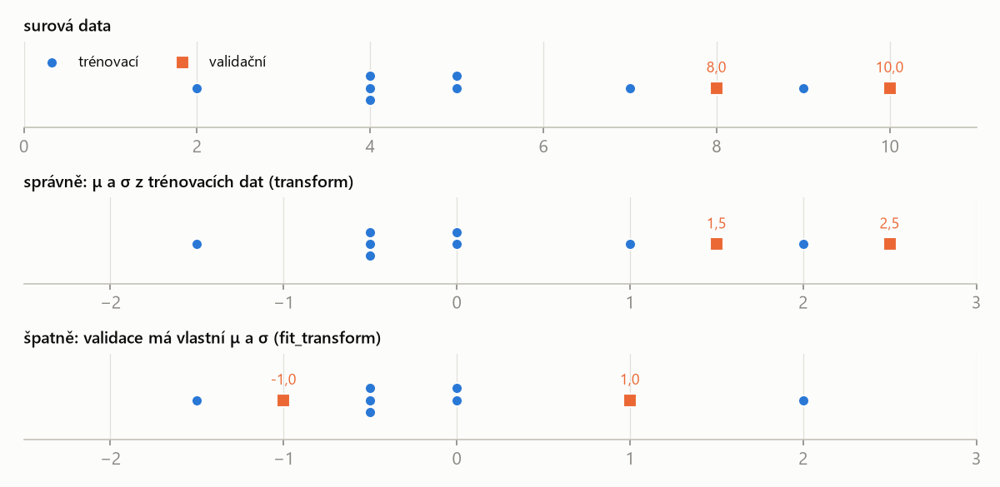
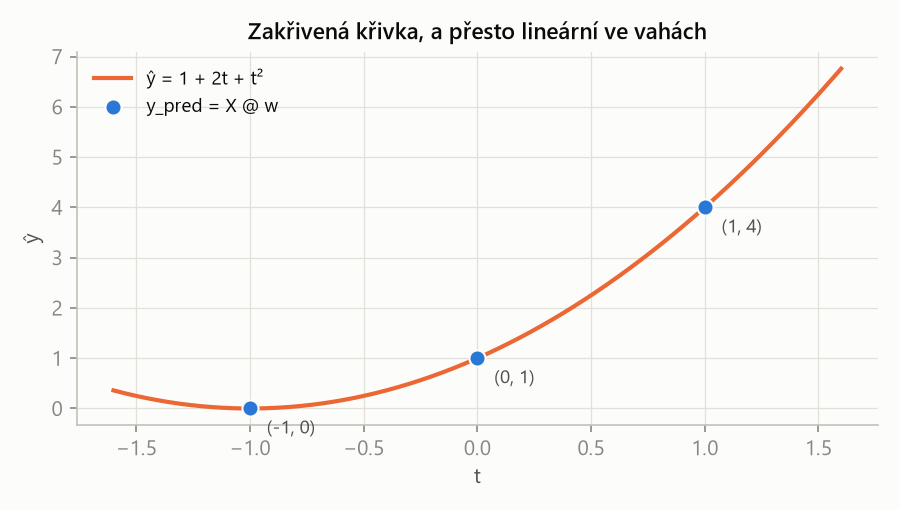
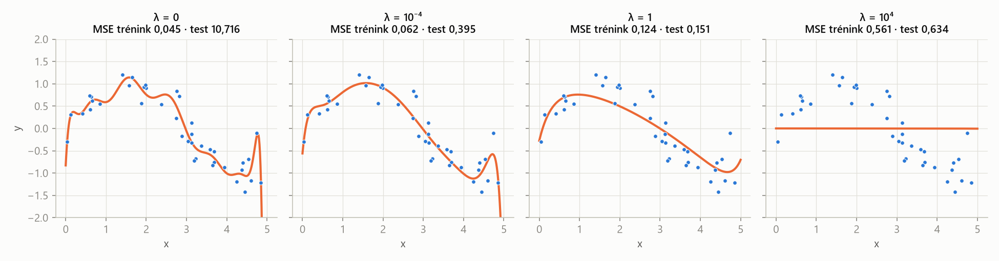

MLR – průběžný test 1 · Celá skripta – MLR · https://balnerm.github.io/pripravy/mlr/test1/skripta_vse.html
MLR – příprava na průběžný test 1
Skripta k Practical test 1 (computing) z MPA-MLR: týden 8 (3.–5. 11.), na začátku cvičení, 5 bodů. Látka přednášek a cvičení 1–6. Kapitoly nejsou podle přednášek, ale podle typů úloh z ukázkových testů A a B; každá má původní úlohu z ukázky, podobné úlohy ze cvičení a řešení krok po kroku.
Formát testu
- 25 minut · 5 bodů · jen papír, bez poznámek, AI a kalkulačky. Zlomky stačí, ukaž postup.
- 5 nezávislých úloh za 0,75–1,25 bodu, zadání anglicky; odpovídat se dá krátce.
- Kód se čte, nespouští: NumPy, indexy od nuly.
- V obou ukázkách byly: jeden ruční výpočet s maticí (lineární regrese / polynomiální příznaky), jedna oprava kódu (standardizace / ridge), jedna interpretace (grafy / matice záměn), jedna smyčka nebo hlasování (bagging / dopředný výběr) a jedna otázka o agentech (skill / subagent).
Mapa typů úloh
| Typ úlohy | V ukázce | Ve cvičení | Kapitola |
|---|---|---|---|
| Čtení kódu, tvary, axis | všude | 1–6 | 1 |
| k-NN ručně, gradientní sestup, k-means | – | 1, 2 | 2 |
| Matice záměn, metriky | B3, A5b | 2 | 3 |
| Standardizace, únik dat, red flags | A2 | 2, 3 | 4 |
| Filtry, dopředný výběr, PCA | B4 | 3 | 5 |
| Lineární regrese ručně | A1 | 4 | 6 |
| Polynomy, přeučení, ridge, jádra | B1, B2, A4 | 4 | 7 |
| Strom, bagging, bootstrap, SVM | A5 | 6 | 8 |
| Agenti: skill, subagent, hook | A3, B5 | 5 | 9 |
Jak se připravit (1–2 dny)
- Ukázky na čas: napiš ukázku A za 25 minut na papír, oprav se podle řešení. Kde jsi ztratil body, otevři kapitolu.
- Kapitoly 1, 6, 7 (kód a matice) – v testu za nejvíc bodů. U každé úlohy nejdřív řeš sám, pak rozbal řešení.
- Kapitoly 3, 4, 5, 8 – krátké výpočty a „najdi chybu v kódu“.
- Kapitola 9 – nauč se definice skill / subagent / hook jednou větou anglicky.
- Ukázka B na čas, pak cvičné testy C–F.
- Večer před testem tahák.
- „Show your reasoning“: napiš matici, dosazení, zlomek se jmenovatelem – ne jen výsledek.
- U „explain“ jedna věta s because; u kódu řekni tvar a význam.
- U opravy kódu napiš opravený řádek.
- Odpověď v angličtině může být jednoduchá; v kapitolách jsou vzorové věty (EN).
Kapitoly
Teorie ke všem tématům je v hlavních skriptech MLR (přednášky 1–7, slovník, tahák parametrů).
Typ úloh 1
Čtení kódu v NumPy
V testu se kód čte, nespouští: „Read code without running it. np is NumPy; indices start at zero.“ Skoro každá úloha (polynomiální příznaky, ridge, hlasování stromů, dopředný výběr) stojí na několika řádcích NumPy. Kdo umí z hlavy říct tvar výsledku a co dělá osa, má polovinu bodů jistou. Tahle kapitola je slovníček idiomů, které se objevují v ukázkách a ve cvičeních 1–6, a postup, jak kód krokovat na papíře.
Tvar pole a konvence dat
Tvar (X.shape) je n-tice s počtem prvků v každé ose pole. Datová matice má v kurzu vždy tvar (n_samples, n_features): řádek = vzorek, sloupec = příznak. Vektor (1D pole) má tvar (n,) – není to řádek ani sloupec.
první číslo říká, kolik je měření (listů, pacientů), druhé, kolik veličin u každého měříme. Když zadání řekne „X has shape (3, 2)“, jsou to 3 vzorky a 2 sloupce.
Parametr axis určuje, podél které osy funkce (sum, mean, argmax …) počítá; tato osa ve výsledku zmizí. U matice axis=0 prochází řádky (výsledek pro každý sloupec), axis=1 prochází sloupce (výsledek pro každý řádek).
axis=1 = „spočítej to v každém řádku zvlášť“ – např. průměr hlasů všech stromů pro jeden vzorek. axis=0 = „v každém sloupci zvlášť“ – např. průměr jednoho příznaku přes všechny vzorky (to dělá standardizace).
Matice (4, 3): mean(axis=1) zruší osu 1 (sloupce) → zbude tvar (4,), jedno číslo na řádek. mean(axis=0) zruší osu 0 (řádky) → tvar (3,), jedno číslo na sloupec. Stačí se podívat, které číslo z tvaru zmizí.
Idiomy, které se v testu opakují
| Kód | Co dělá | Příklad / výsledek |
|---|---|---|
A * B | násobení po prvcích (stejné tvary) | [1,2]*[3,4] → [3,8] |
A @ B | maticový součin; vnitřní rozměry se musí shodovat | (3,2) @ (2,) → (3,) |
X.T | transpozice: (n, d) → (d, n) | X.T @ X má tvar (d, d) |
t ** j | umocnění po prvcích | t**0 = samé jedničky |
range(3) | čísla 0, 1, 2 (konec se nepočítá) | range(1, 3) → 1, 2 |
np.column_stack([a, b]) | poskládá 1D pole jako sloupce matice | 3 vektory délky 3 → (3, 3) |
np.eye(k) | jednotková matice k × k | np.eye(X.shape[1]) = počet sloupců |
X.shape[0], X.shape[1] | počet řádků (vzorků), počet sloupců (příznaků) | (3, 2) → 3, 2 |
X[:, 1], X[1] | sloupec 1 (druhý!), řádek 1 (druhý!) | indexy od nuly |
X[mask] | výběr prvků, kde je maska True | a[a > 2] |
a > 0.5 | porovnání po prvcích → pole True/False | .astype(int) → 1/0 |
np.argmax(s) | pozice (index) největšího prvku; při shodě první | [.8,.9,.85] → 1 |
np.argsort(d) | indexy seřazené od nejmenší hodnoty | [3,1,2] → [1,2,0] |
np.unique(v, return_counts=True) | různé hodnoty (seřazené) a jejich počty | hlasování k-NN |
np.mean(y_true == y_pred) | podíl shod = accuracy | True = 1, False = 0 |
rng.choice(n, size=n, replace=True) | n indexů z 0…n−1 s vracením (bootstrap) | opakování možné |
lst.pop(i) | odebere ze seznamu prvek na pozici i a vrátí ho | [1,3,4].pop(1) → 3 |
lst.remove(x) | odebere první prvek s hodnotou x | [1,3,4].remove(3) |
Poznáš to: Write the matrix X, give both resulting lists, explain axis=1, explain the dimensional error.
- U každé proměnné si poznamenej tvar (
(3,),(3, 2)…). Tvar řekne víc než hodnoty. - Řádek po řádku napiš skutečné hodnoty – u malých polí celé, u velkých jen tvar.
- U
@zkontroluj vnitřní rozměry:(a, b) @ (b, c)→(a, c). Nesedí-li, je to „dimensional error“. - U
axisřekni, která osa zmizí, a co tedy výsledek znamená („jedno číslo na vzorek“). - Pozor na index od nuly: „pozice 1“ je druhý prvek.
Úlohy
a = np.array([[1, 2, 3],
[4, 5, 6]])
print(a.shape)
print(a.sum(axis=0))
print(a.mean(axis=1))
print(a[:, 1], a[1])
print(a[a > 2])Write every printed value.
Řešení krok po kroku
a.shape=(2, 3)– dva řádky, tři sloupce.sum(axis=0)zruší řádky → součet každého sloupce: 1+4, 2+5, 3+6 =[5, 7, 9].mean(axis=1)zruší sloupce → průměr každého řádku: (1+2+3)/3 = 2, (4+5+6)/3 = 5 →[2., 5.](průměr je vždy desetinné číslo).a[:, 1]= všechny řádky, sloupec s indexem 1 (druhý) →[2, 5];a[1]= druhý řádek[4, 5, 6].a > 2dá masku[[F, F, T], [T, T, T]];a[mask]vybere hodnoty po řádcích:[3, 4, 5, 6].
* versus @A = np.array([[1, 2], [3, 4]])
B = np.array([[0, 1], [1, 0]])
P = A * B
Q = A @ BWrite P and Q.
Řešení krok po kroku
1. Po prvcích: násobí se čísla na stejném místě.
\[ P = \begin{bmatrix} 1\cdot 0 & 2\cdot 1 \\ 3\cdot 1 & 4\cdot 0 \end{bmatrix} = \begin{bmatrix} 0 & 2 \\ 3 & 0 \end{bmatrix} \]2. Maticově: prvek (i, j) = řádek i matice A krát sloupec j matice B.
\[ Q = \begin{bmatrix} 1\cdot 0 + 2\cdot 1 & 1\cdot 1 + 2\cdot 0 \\ 3\cdot 0 + 4\cdot 1 & 3\cdot 1 + 4\cdot 0 \end{bmatrix} = \begin{bmatrix} 2 & 1 \\ 4 & 3 \end{bmatrix} \]X has shape (100, 3) (rows are samples), y has shape (100,), w has shape (3,). Give the shapes of X.T, X.T @ X, X.T @ y, X @ w, X @ X.T and np.eye(X.shape[1]).
Řešení krok po kroku
X.T: rozměry se prohodí →(3, 100).X.T @ X=(3, 100) @ (100, 3)→(3, 3): velikost dává počet příznaků, ne počet vzorků.X.T @ y=(3, 100) @ (100,)→(3,).X @ w=(100, 3) @ (3,)→(100,): jedna predikce na vzorek.X @ X.T=(100, 3) @ (3, 100)→(100, 100)– to je matice z duálního tvaru (jeden řádek na vzorek).np.eye(X.shape[1])=np.eye(3)→(3, 3), sedí kX.T @ X.
s = np.array([0.3, 0.9, 0.1, 0.9])
print(np.argmax(s), np.argsort(s))
labels = np.array(["b", "a", "b", "c", "b"])
values, counts = np.unique(labels, return_counts=True)
print(values, counts, values[np.argmax(counts)])Write the printed values.
Řešení krok po kroku
- Maximum 0,9 je na pozicích 1 a 3;
argmaxvrátí první →1. argsortseřadí indexy podle hodnot vzestupně: 0,1 (index 2), 0,3 (index 0), 0,9 (index 1), 0,9 (index 3) →[2, 0, 1, 3].uniquevrátí seřazené různé hodnoty['a', 'b', 'c']a počty[1, 3, 1].argmax(counts)= 1 →values[1]='b'. Takhle se ve cvičení 2 hlasuje v k-NN.
remaining = [1, 3, 4]
selected = [0]
f = remaining.pop(1)
selected.append(f)
print(f, selected, remaining)Write the printed values. Then rewrite the update using remove instead of pop.
Řešení krok po kroku
pop(1) odebere prvek na pozici 1 (hodnotu 3) a vrátí ho. remove(3) by odebral prvek s hodnotou 3 – je potřeba ji nejdřív zjistit indexem remaining[1]. Chyba typu remaining.remove(1) by odebrala hodnotu 1, tedy úplně jiný příznak. Přesně tohle testuje úloha B4 (kapitola 5).
p = np.array([0.2, 0.5, 0.7, 0.9])
y_hat = (p > 0.5).astype(int)
y_true = np.array([0, 1, 1, 1])
acc = np.mean(y_hat == y_true)Write y_hat and acc.
Řešení krok po kroku
p > 0.5→[False, False, True, True](ostrá nerovnost, 0,5 neprojde).astype(int)→[0, 0, 1, 1].- Shody s
[0, 1, 1, 1]:[T, F, T, T]; průměr = 3/4 = 0,75.
rng.choice s vracením a bezrng = np.random.default_rng(0)
idx = rng.choice(6, size=6, replace=True) # returned [2, 0, 2, 5, 1, 2]
X_b, y_b = X[idx], y[idx]a) Which rows of X are in the sample, and how many times? b) Which rows are left out? c) What would change with replace=False?
Řešení krok po kroku
np.unique(idx)=[0, 1, 2, 5]– čtyři různé řádky, řádek 2 je tam třikrát.- Vynechané (out-of-bag) jsou řádky 3 a 4.
- S
replace=Falseasize=6se každý index vybere právě jednou – vznikne jen zamíchané pořadí, žádná rozmanitost pro bagging. - Stejné
idxproXiydrží páry příznak–label pohromadě.
- Index od nuly: „pozice 1“ je druhý prvek,
X[:, 1]je druhý sloupec. *není maticový součin. Pro součin matic je@.shape[0]vs.shape[1]: řádky (vzorky) vs. sloupce (příznaky). Ridge potřebujenp.eye(X.shape[1]).argmaxvrací pozici, ne hodnotu – a pozici v tom seznamu, na který byl zavolán.- Ostrá nerovnost:
> 0.5pro přesně 0,5 dáváFalse(remíza při sudém počtu hlasujících). - Průměr je float:
meanvrací2., ne2.
Vždy uveď tvar a význam: „axis=1 averages across the columns (trees) of each row, so the result has one value per sample, shape (4,).“ Matici napiš celou, ne jen pár prvků; u seznamů obě výsledné hodnoty.
axis=1 means the mean is taken along each row, over the columns; the output has one number per row.
Řádek = vzorek, sloupec = příznak; axis je osa, která zmizí; @ násobí matice, * prvky; argmax dává pozici.
Shrnutí
Datová matice má tvar (n_samples, n_features). Funkce s axis počítají podél zvolené osy a ta z výsledku zmizí: axis=0 dá hodnotu pro každý sloupec, axis=1 pro každý řádek. Maticový součin @ vyžaduje shodné vnitřní rozměry, * násobí po prvcích. argmax a argsort vracejí indexy, np.unique(..., return_counts=True) slouží k hlasování, rng.choice(..., replace=True) k bootstrapu. Při trasování kódu piš ke každé proměnné tvar a hodnoty.
Take-home messages
- Napiš si tvar každé proměnné dřív, než počítáš hodnoty.
axis= osa, která ve výsledku zmizí.(a, b) @ (b, c)→(a, c);X.T @ Xmá velikost počtu příznaků.argmax= pozice (první při shodě), ne hodnota ani původní číslo příznaku.- Indexy od nuly,
range(3)= 0, 1, 2.
Otázky k testu
Matice hlasů V má tvar (4, 3) – řádky vzorky, sloupce stromy. Jaký tvar má V.mean(axis=1) a co znamená?
Tvar (4,): pro každý vzorek průměr hlasů tří stromů, tedy podíl stromů, které hlasují pro třídu 1.
Proč je X.T @ X malá matice i pro milion vzorků?
Má tvar (d, d), kde d je počet sloupců (příznaků). Počet vzorků se „sečte“ ve vnitřním rozměru.
Co vrátí np.argmax([0.7, 0.9, 0.9]) a proč?
1 – pozici prvního maxima. Při shodě vyhrává první výskyt.
Jaký je rozdíl mezi lst.pop(1) a lst.remove(1)?
pop(1) odebere prvek na pozici 1 a vrátí ho; remove(1) odebere první prvek s hodnotou 1 a nic nevrací.
Co dělá np.column_stack([np.ones(3), x]) pro x = [1, 2, 3]?
Vytvoří matici (3, 2) se sloupcem jedniček a sloupcem x: řádky [1, 1], [1, 2], [1, 3] – matici plánu pro přímku s interceptem.
Kdy je (a > 0.5).astype(int) rovno 1 a kdy 0?
1 jen pro hodnoty ostře větší než 0,5; přesně 0,5 dává 0.
Typ úloh 2
Vzdálenosti, k-NN a gradientní sestup
První dvě cvičení počítala nejbližšího souseda nejdřív na papíře, pak v NumPy. Na papíře se počítá s kvadrátem vzdálenosti \(d^2\) – odmocnina pořadí nemění, takže stačí celá čísla. K tomu krok gradientního sestupu a k-means z 1. přednášky: krátké výpočty, které se dají spočítat bez kalkulačky.
Nejbližší soused a k-NN
Eukleidovská vzdálenost dvou vzorků \(\mathbf a, \mathbf b\) s d příznaky je délka úsečky mezi nimi: \[ d(\mathbf a, \mathbf b) = \sqrt{\sum_{j=1}^{d} (a_j - b_j)^2} \]
„vzdálenost pravítkem“. Sčítají se čtverce rozdílů všech příznaků – proto příznak s velkými čísly (centimetry vs. desetiny centimetru) vzdálenost ovládne a před k-NN se standardizuje (kapitola 4).
k-NN (k nejbližších sousedů) zařadí nový vzorek do třídy, která má většinu mezi jeho k nejbližšími trénovacími vzorky. Pro k = 1 je to pravidlo nejbližšího souseda \(\hat y(\mathbf x_\ast) = y_{(1)}\). Nemá trénovací fázi: fit si data jen zapamatuje („lazy learner“).
„řekni mi, kdo jsou tví sousedé“. Malé k = citlivé na jeden zatoulaný bod (šum), velké k = rozmazané hranice tříd. k je hyperparametr – vybírá se na validačních datech.
- Pro každý trénovací bod spočítej \(d^2 = (x_1 - x_{1\ast})^2 + (x_2 - x_{2\ast})^2\) – bez odmocniny.
- Přiřaď pořadí: 1 = nejbližší.
- Vezmi k nejmenších a spočítej hlasy tříd. Vyhrává většina.
- Napiš, jak se predikce mění s k, a upozorni na remízu (sudé k, stejné vzdálenosti).
Training points: A at (2, 3), (1, 1), (0, 0); B at (4, 4), (5, 3), (3, 6). Classify the new point (3, 3) with 1-NN, 3-NN and 5-NN. Use squared Euclidean distance.
Řešení krok po kroku
| bod | třída | \(d^2\) k (3, 3) | pořadí |
|---|---|---|---|
| (2, 3) | A | 1 + 0 = 1 | 1 |
| (4, 4) | B | 1 + 1 = 2 | 2 |
| (5, 3) | B | 4 + 0 = 4 | 3 |
| (1, 1) | A | 4 + 4 = 8 | 4 |
| (3, 6) | B | 0 + 9 = 9 | 5 |
| (0, 0) | A | 9 + 9 = 18 | 6 |
- k = 1: nejbližší je (2, 3) → A.
- k = 3: A, B, B → B (2 : 1).
- k = 5: A, B, B, A, B → B (3 : 2).
Jediný blízký bod A „přehlasují“ sousedé B, jakmile k vzroste – stejný jev jako ve cvičení 2 s velkou třešní mezi ořešáky.
distances = np.array([2.0, 0.5, 1.5, 0.7, 3.0])
labels = np.array(["cherry", "maple", "walnut", "walnut", "maple"])
order = np.argsort(distances)
nearest = labels[order[:3]]
values, counts = np.unique(nearest, return_counts=True)
prediction = values[np.argmax(counts)]Write order, nearest, values, counts and prediction.
Řešení krok po kroku
- Vzdálenosti vzestupně: 0,5 (index 1), 0,7 (3), 1,5 (2), 2,0 (0), 3,0 (4) →
order = [1, 3, 2, 0, 4]. order[:3]=[1, 3, 2]→ labely maple, walnut, walnut.unique(abecedně): maple 1×, walnut 2× →argmax(counts)= 1 → walnut.
A 1-NN model is fitted on all 518 leaves and evaluated with accuracy_score(y, model.predict(X)) on the same rows. It reports 0.99. Why is this number useless? How do you fix it?
Řešení krok po kroku
U 1-NN je každý trénovací vzorek svým vlastním nejbližším sousedem, takže predikce na trénovacích datech je správně skoro vždy (chybí jen tam, kde dvě stejná měření mají různé labely). Číslo neříká nic o nových datech. Oprava: rozdělit data (např. 70/30, stratify=y), fit jen na trénovací části, accuracy měřit na testovací části. Ve cvičení vyšlo poctivě asi 0,92 místo 0,99.
Gradientní sestup
Gradientní sestup hledá minimum funkce opakováním kroku proti gradientu: \[ \mathbf x^{(t+1)} = \mathbf x^{(t)} - \eta\, \nabla f(\mathbf x^{(t)}) \] kde \(\eta > 0\) je krok učení (learning rate) a gradient \(\nabla f\) je vektor parciálních derivací.
gradient ukazuje do kopce, proto jdeme na opačnou stranu. Malé η = pomalé plížení, příliš velké η = přeskočení minima a rozkmit nebo divergence.
Minimize \(f(w) = (w - 3)^2\) by gradient descent from \(w_0 = 0\). a) Write the update rule. b) Compute \(w_1, w_2\) for \(\eta = 0.25\). c) What happens for \(\eta = 1\) and \(\eta = 1.25\)?
Řešení krok po kroku
1. Derivace a pravidlo:
\[ \begin{aligned} f'(w) &= 2(w - 3) \\ w_{t+1} &= w_t - 2\eta\,(w_t - 3) \end{aligned} \]2. η = 0,25:
\[ \begin{aligned} w_1 &= 0 - 0{,}25\cdot(-6) = 1{,}5 \\ w_2 &= 1{,}5 - 0{,}25\cdot(-3) = 2{,}25 \end{aligned} \]3. Vzdálenost od minima \(e_t = w_t - 3\) se násobí \((1 - 2\eta)\): pro η = 0,25 je to 0,5 (konverguje), pro η = 1 je to −1 (kmitá mezi 0 a 6), pro η = 1,25 je to −1,5 (každý krok o polovinu dál – diverguje). Konvergence nastane přesně pro \(|1 - 2\eta| < 1\), tj. \(0 < \eta < 1\).
\(f(\mathbf x) = \tfrac12(x_1^2 + 5x_2^2)\). Compute the gradient and one step from \(\mathbf x = (2, 1)\) with \(\eta = 0.1\).
Řešení krok po kroku
Ve strmém směru \(x_2\) se bod posunul víc. Kdyby η bylo větší než 2/5, ve směru \(x_2\) by sestup divergoval (podmínka z přednášky \(\eta < 2/L\), tady L = 5).
k-means: jeden krok
k-means střídá dva kroky: (1) přiřazení – každý bod patří k nejbližšímu středu \(\boldsymbol\mu_j\); (2) aktualizace – každý střed je průměr svých bodů. Končí, když se přiřazení nezmění.
body si vyberou nejbližší „vlajku“, vlajka se přesune doprostřed svých bodů, a znovu. Učení bez učitele – labely se nepoužijí.
Points 1, 2, 4, 8, 9; k = 2; initial means \(\mu_1 = 1\), \(\mu_2 = 4\). Run k-means until it stops.
Řešení krok po kroku
- Přiřazení k (1, 4): 1 → μ₁, 2 → μ₁ (vzdálenosti 1 a 2), 4, 8, 9 → μ₂.
- Aktualizace: μ₁ = (1 + 2)/2 = 1,5; μ₂ = (4 + 8 + 9)/3 = 7.
- Přiřazení k (1,5; 7): bod 4 má vzdálenosti 2,5 a 3 → přejde k μ₁.
- Aktualizace: μ₁ = (1 + 2 + 4)/3 = 7/3; μ₂ = (8 + 9)/2 = 8,5.
- Přiřazení se už nemění → konec.
- Odmocninu při porovnávání vzdáleností nepočítej – pořadí \(d\) a \(d^2\) je stejné.
- Remíza: při sudém k nebo stejných vzdálenostech napiš, jak ji řešíš (každá implementace jinak).
- Gradientní sestup jde minus gradient; znaménko je nejčastější chyba.
- k-NN potřebuje škálované příznaky – jinak rozhoduje příznak s největšími čísly.
Tabulku \(d^2\) s pořadím, jasně vyznačené hlasy a výsledek pro každé k. U sestupu vzorec, dosazení a hodnoty po krocích.
With k = 1 the nearest point (distance² = 1) is class A, so we predict A. With k = 3 the votes are A, B, B, so the majority is B.
k-NN: spočítej \(d^2\), seřaď, nech hlasovat k nejbližších. Gradientní sestup: \(w \leftarrow w - \eta f'(w)\); velikost η rozhoduje mezi plížením, rychlou konvergencí a divergencí.
Shrnutí
Na papíře se k-NN počítá přes kvadrát vzdálenosti a pořadí sousedů; predikce je většina mezi k nejbližšími. V kódu to dělá np.argsort a np.unique(..., return_counts=True). Trénovací accuracy 1-NN je bezcenná, protože každý bod je sám sobě sousedem. Gradientní sestup posouvá parametr proti derivaci o krok η; u kvadratické funkce se chyba každým krokem násobí \(1 - 2\eta\), takže je jasně vidět konvergence, kmitání i divergence. k-means střídá přiřazení k nejbližšímu středu a přepočet středů.
Take-home messages
- Porovnávej \(d^2\), odmocnina pořadí nemění.
- k-NN predikce se může s rostoucím k změnit – vždy napiš hlasy.
- Trénovací accuracy 1-NN ≈ 100 % a nic neznamená.
- \(w_{t+1} = w_t - \eta \nabla f(w_t)\); příliš velké η diverguje.
- k-means: přiřaď → přepočítej průměry → opakuj, dokud se nic nemění.
Otázky k testu
Proč stačí porovnávat \(d^2\) místo \(d\)?
Odmocnina je rostoucí funkce, takže pořadí vzdáleností se nezmění a nejbližší soused je stejný.
Co dělá fit u k-NN?
Jen si uloží trénovací data a labely. Veškerá práce (vzdálenosti, hlasování) proběhne až v predict.
Jak se mění k-NN s rostoucím k?
Malé k sleduje jednotlivé body (šum, přeučení), velké k vyhlazuje hranici a pro k = n předpovídá vždy majoritní třídu (podučení).
Napiš krok gradientního sestupu a vysvětli roli η.
\(\mathbf w \leftarrow \mathbf w - \eta \nabla f(\mathbf w)\). η určuje délku kroku: malé = pomalá konvergence, velké = přestřelení, kmitání nebo divergence.
Kdy se gradientní sestup zastaví?
Když je gradient malý, změna parametrů nebo hodnoty funkce je malá, po maximálním počtu iterací, nebo (při trénování) když přestane klesat validační chyba. Malý gradient znamená jen stacionární bod.
Čím se liší k-NN a k-means?
k-NN je klasifikátor s učitelem (používá labely sousedů), k je počet sousedů. k-means je shlukování bez učitele, k je počet shluků a labely se nepoužijí.
Typ úloh 3
Matice záměn a metriky
Úloha B3 dá matici záměn a chce počty chyb, accuracy, recall se jmenovateli a vysvětlení recallu slovy v kontextu („faulty items“). Ve cvičení 2 se totéž počítalo pro javory (TP 15, FN 5, FP 10, TN 70) a z vektorů labelů v NumPy. Body se ztrácejí hlavně tím, že se přehodí řádky a sloupce, nebo že chybí slovní význam.
Matice záměn
Matice záměn je tabulka počtů, kde řádky jsou skutečné třídy a sloupce predikované třídy (tak to používá přednáška i sklearn.metrics.confusion_matrix). Pro binární úlohu s pozitivní třídou 1 obsahuje počty TN, FP (skutečně 0) a FN, TP (skutečně 1).
na diagonále jsou správné odpovědi, mimo ni chyby. FN = „přehlédli jsme pozitivní“, FP = „falešný poplach“. Vždy si nejdřív přečti, co jsou řádky a co sloupce – zadání to může otočit.
| predicted 0 | predicted 1 | |
|---|---|---|
| actual 0 | TN | FP |
| actual 1 | FN | TP |
Recall pozitivní třídy je podíl skutečně pozitivních vzorků, které model správně označil jako pozitivní: \[ \text{recall} = \frac{TP}{TP + FN} \]
„kolik ze skutečně vadných kusů jsme našli“. Jmenovatel je řádek skutečných pozitivních. Vysoký recall = málo přehlédnutých.
Precision je podíl vzorků označených jako pozitivní, které jsou opravdu pozitivní: \[ \text{precision} = \frac{TP}{TP + FP} \]
„když alarm zazvoní, jak často je to pravda“. Jmenovatel je sloupec predikovaných pozitivních.
Specificita je recall negativní třídy, podíl skutečně negativních vzorků označených jako negativní: \(TN/(TN + FP)\).
kolik dobrých kusů jsme správně nechali projít.
| TP | skutečně 1, predikce 1 (správný poplach) |
| TN | skutečně 0, predikce 0 |
| FP | skutečně 0, predikce 1 (falešný poplach) |
| FN | skutečně 1, predikce 0 (přehlédnuto) |
Poznáš to: rows are actual labels, treat class 1 as positive, how many … were missed, incorrectly flagged, show the denominators.
- Přečti orientaci (řádky = skutečnost?) a která třída je pozitivní.
- Vypiš TP, TN, FP, FN s významem v kontextu („missed faulty items = FN“).
- Metriku napiš jako zlomek se jmenovatelem, teprve pak hodnotu.
- Slovně: „Out of all actually faulty items, the model detected …“.
Úlohy
Class 1 means a faulty item; class 0 means a good item. Rows are actual labels and columns are predicted labels:
| Predicted 0 | Predicted 1 | |
|---|---|---|
| Actual 0 | 6 | 2 |
| Actual 1 | 1 | 3 |
For recall, treat class 1 as positive (TP: true positives, FN: false negatives): \(\text{recall}_1 = \frac{TP}{TP + FN}\).
a) How many faulty items were missed? How many good items were incorrectly flagged as faulty? (0.25)
b) Calculate accuracy and recall for class 1. Show the denominators. (0.5)
c) Explain recall for class 1 in words in this application. (0.25)
Řešení krok po kroku
1. Čtení matice: TN = 6, FP = 2, FN = 1, TP = 3, celkem 12 kusů.
a) Přehlédnuté vadné kusy = skutečně 1, predikce 0 = FN = 1. Dobré kusy označené jako vadné = skutečně 0, predikce 1 = FP = 2.
b) Accuracy a recall:
\[ \begin{aligned} \text{accuracy} &= \frac{TP + TN}{12} = \frac{3 + 6}{12} = \frac{9}{12} = 0{,}75 \\ \text{recall}_1 &= \frac{TP}{TP + FN} = \frac{3}{3 + 1} = \frac34 = 0{,}75 \end{aligned} \]c) Recall pro třídu 1 = podíl skutečně vadných kusů, které model odhalil: ze 4 vadných kusů zachytil 3, jeden propustil.
Recall for class 1 is the fraction of truly faulty items that the model flags as faulty: 3 of the 4 faulty items were detected, 1 was missed.
100 leaves, positive class = maple (20 real maples). TP = 15, FN = 5, FP = 10, TN = 70. Compute accuracy, sensitivity, specificity, precision, F1 and balanced accuracy. Then compute accuracy and balanced accuracy of the constant classifiers “always maple” and “never maple”.
Řešení krok po kroku
„Always maple“: TP = 20, FP = 80 → accuracy 0,2, sensitivity 1, specificity 0 → balanced 0,5. „Never maple“: TN = 80, FN = 20 → accuracy 0,8 (vypadá dobře!), sensitivity 0, specificity 1 → balanced 0,5. Balanced accuracy odhalí, že konstantní model nic neumí.
labels = np.array([0, 1, 1, 1, 0, 0, 1, 1, 1, 1])
preds = np.array([0, 0, 1, 1, 0, 1, 1, 1, 1, 0])
TP = np.sum((labels == 1) & (preds == 1))
FN = np.sum((labels == 1) & (preds == 0))
FP = np.sum((labels == 0) & (preds == 1))
TN = np.sum((labels == 0) & (preds == 0))
sensitivity = TP / (TP + FN)Give the four counts and the sensitivity. What does & do here?
Řešení krok po kroku
Projdi dvojice (label, pred): (0,0) TN, (1,0) FN, (1,1) TP, (1,1) TP, (0,0) TN, (0,1) FP, (1,1) TP, (1,1) TP, (1,1) TP, (1,0) FN. Součet: TP 5, FN 2, FP 1, TN 2 (celkem 10). & je logické AND po prvcích dvou booleovských polí; np.sum spočítá hodnoty True. Sensitivity = 5/(5 + 2) = 5/7 ≈ 0,71.
Disease screening, class 1 = ill. Rows are predicted labels and columns are actual labels:
| Actual 0 | Actual 1 | |
|---|---|---|
| Predicted 0 | 40 | 5 |
| Predicted 1 | 10 | 45 |
Compute recall and precision for class 1.
Řešení krok po kroku
FN = predikce 0, skutečnost 1 = 5 (řádek Predicted 0, sloupec Actual 1). FP = predikce 1, skutečnost 0 = 10.
\[ \begin{aligned} \text{recall} &= \frac{45}{45 + 5} = \frac{45}{50} = 0{,}9 \\ \text{precision} &= \frac{45}{45 + 10} = \frac{9}{11} \approx 0{,}82 \end{aligned} \]True values \(y = [2, 4, 6]\), predictions \(\hat y = [3, 4, 4]\). Compute MSE and MAE. Which is more sensitive to one large error?
Řešení krok po kroku
Chyby \(\hat y - y = [1, 0, -2]\).
\[ \begin{aligned} \text{MSE} &= \frac{1^2 + 0^2 + (-2)^2}{3} = \frac53 \\ \text{MAE} &= \frac{1 + 0 + 2}{3} = 1 \end{aligned} \]MSE je ve čtverečních jednotkách a jedna velká chyba (2 → 4) má větší váhu.
A dataset contains 95 % maples. A 3-NN model reports test accuracy 0.95. What would you check before believing it?
Řešení krok po kroku
Konstantní model „vždy javor“ (DummyClassifier(strategy="most_frequent")) má accuracy 0,95 a přitom nenajde jediný ne-javor. Je nutné porovnat s touto baseline a uvést recall obou tříd, balanced accuracy nebo macro F1 a matici záměn.
- Orientace: v kurzu řádky = skutečnost; když zadání řekne opak, přepiš si TP/FP/FN/TN dřív, než počítáš.
- Recall vs. precision: recall dělí řádkem skutečných pozitivních (TP + FN), precision sloupcem predikovaných (TP + FP).
- Slovní vysvětlení v kontextu: „faulty items“, ne „positives“.
- Accuracy na nevyvážených datech lže – srovnej s majoritní baseline.
- V
sklearnu binárních metrik záleží napos_label;recall_score(..., pos_label=0)= specificita.
Vypiš čtyři čísla s významem, vzorec, dosazený zlomek a výsledek. U slovní části použij doménu úlohy.
FN = 1 faulty item was missed; FP = 2 good items were wrongly flagged. Accuracy = (3 + 6)/12 = 0.75. Recall₁ = 3/(3 + 1) = 0.75.
Řádek = skutečnost, sloupec = predikce; recall = TP/(TP + FN) „kolik pozitivních jsme našli“, precision = TP/(TP + FP) „kolik poplachů je pravých“.
Shrnutí
Matice záměn shrnuje binární klasifikaci do čtyř čísel TP, TN, FP, FN. Accuracy je podíl správných, recall (sensitivita) podíl nalezených pozitivních, specificita podíl správně rozpoznaných negativních, precision podíl pravdivých poplachů a F1 jejich harmonický průměr. Na nevyvážených datech je accuracy zavádějící; porovnává se s majoritní baseline a uvádí se balanced accuracy. Pro regresi se používá MSE (čtverce, citlivé na velké chyby) a MAE (absolutní hodnoty).
Take-home messages
- Nejdřív orientace matice a pozitivní třída.
- FN = přehlédnuté pozitivní, FP = falešný poplach.
- Recall dělí skutečnými pozitivními, precision predikovanými pozitivními.
- Vždy ukaž jmenovatel.
- Accuracy 0,95 nic neznamená, pokud má majoritní třída 95 %.
Otázky k testu
Co znamená FN v aplikaci „class 1 = faulty item“?
Vadný kus, který model označil jako dobrý – přehlédnutá vada.
Jaký je rozdíl mezi recall a precision?
Recall: z kusů, které jsou skutečně pozitivní, kolik jsme označili (TP/(TP + FN)). Precision: z kusů, které jsme označili, kolik je skutečně pozitivních (TP/(TP + FP)).
Kdy preferovat vysoký recall?
Když je přehlédnutí drahé: vadné díly, nemoc při screeningu. Raději víc falešných poplachů než propuštěná vada.
Proč je balanced accuracy konstantního klasifikátoru 0,5?
Jedna třída má recall 1, druhá 0; průměr je 0,5 bez ohledu na poměr tříd.
Jak spočítat TP z vektorů y a p v NumPy?
np.sum((y == 1) & (p == 1)) – AND dvou masek a počet hodnot True.
Proč má MSE jiné jednotky než MAE?
MSE průměruje čtverce chyb (cm²), MAE absolutní hodnoty (cm).
Typ úloh 4
Předzpracování a únik dat
Úloha A2 („Repair preprocessing“) je typický red flag: kód běží, vrátí číslo, ale je špatně. Ve cvičení 2 byly čtyři takové úryvky (A–D) a ve cvičení 3 doplňování chybějících hodnot. Všechny mají jedno pravidlo: vše, co se učí z dat (μ, σ, min, max, průměr na doplnění, hyperparametr), se učí jen z trénovací části; validace slouží k výběru, test se použije jednou na konci.
Pojmy
Standardizace převede každý příznak na nulový průměr a jednotkovou směrodatnou odchylku pomocí průměru a směrodatné odchylky trénovacích dat: \[ x' = \frac{x - \mu_{\text{train}}}{\sigma_{\text{train}}} \]
„o kolik směrodatných odchylek je hodnota nad trénovacím průměrem“. Po standardizaci mají všechny příznaky srovnatelné měřítko, takže ve vzdálenosti (k-NN) nepřeváží příznak s velkými čísly.
Min-max normalizace zobrazí příznak lineárně do intervalu [0, 1] podle minima a maxima trénovacích dat: \(x' = (x - \min_{\text{train}})/(\max_{\text{train}} - \min_{\text{train}})\).
nová data mohou vyjít mimo [0, 1] – to je v pořádku, nikdy se kvůli tomu „nepřefituje“.
Únik dat nastane, když se do trénování nebo výběru modelu dostane informace z dat, na kterých se pak model hodnotí (validační nebo testovací), takže odhad výkonu je příliš optimistický.
model „viděl tahák“. Číslo pak neodpovídá tomu, co model udělá na opravdu nových datech.
Trénovací množina slouží k učení parametrů modelu a předzpracování, validační k výběru hyperparametrů, příznaků a modelu, testovací k jedinému závěrečnému odhadu výkonu na nových datech.
„fit the model | choose the hyperparameters | report once“. Typické dělení 60/20/20 nebo 70/15/15; při malých datech křížová validace na trénovací části.
scaler = StandardScaler()
X_train = scaler.fit_transform(train) # μ, σ se naučí z train a hned se použijí
X_valid = scaler.transform(valid) # jen použití uloženého μ, σ
X_test = scaler.transform(test)fit | spočítá a uloží parametry (mean_, scale_) z dat, která dostane |
transform | použije uložené parametry, nic nového se neučí |
fit_transform | obojí najednou – jen na trénovací data |

fit_transform, vyjdou −1 a 1, takže hodnota 8 se tváří jako podprůměrná.Vlastní μ a σ validace posunou validační body vůči trénovacím. Pro k-NN se tím změní, kdo je čí soused – model dostává jinou souřadnicovou soustavu, než ve které se učil.
Poznáš to: fit_transform(valid), scaler na celých datech před train_test_split, výběr k / λ / příznaků podle testu, accuracy na trénovacích datech, fillna s průměrem ze všech dat.
- Najdi každé místo, kde se něco učí (
fit,mean(),max(scores),argmax). - Zeptej se, z jakých dat se to učí. Musí to být jen trénovací část (výběr hyperparametrů: validační).
- Vysvětli důsledek: optimistický odhad, nebo nekonzistentní měřítko.
- Napiš opravu (
transformmístofit_transform, split před škálováním, výběr na validaci…).
Úlohy
Training and validation rows have already been split correctly. A k-NN model will use these transformed features:
scaler = StandardScaler()
X_train = scaler.fit_transform(train)
X_valid = scaler.fit_transform(valid)a) Explain why the original code is wrong for distance-based prediction. Which data must determine the mean and standard deviation? (0.75)
b) The training mean is 1 and standard deviation is 1. Standardize a validation value of 4. (0.25)
Řešení krok po kroku
a) fit_transform(valid) přepočítá μ a σ z validačních dat a přepíše ty trénovací. Validační body jsou pak škálované jinak než trénovací, takže vzdálenosti mezi validačním a trénovacím bodem k-NN neodpovídají skutečnosti a sousedé se změní. Navíc se ze validačních dat něco učí (únik). Parametry musí určit jen trénovací data; oprava:
X_train = scaler.fit_transform(train)
X_valid = scaler.transform(valid)b) Dosazení trénovacích parametrů:
\[ z = \frac{x - \mu_{\text{train}}}{\sigma_{\text{train}}} = \frac{4 - 1}{1} = 3 \]The validation set is rescaled with its own mean and standard deviation, so training and validation points live in different coordinate systems and the k-NN distances become meaningless; it also learns from validation data. The mean and standard deviation must come from the training data only: use scaler.transform(valid). z = (4 − 1)/1 = 3.
Training values of one feature: 2, 4, 4, 4, 5, 5, 7, 9. a) Compute μ and σ (population, as in StandardScaler). b) Standardize validation values 9 and 3. c) Min-max scale the value 8 using training min 2 and max 10, and the value 12.
Řešení krok po kroku
1. Průměr a rozptyl:
\[ \begin{aligned} \mu &= \frac{2 + 4 + 4 + 4 + 5 + 5 + 7 + 9}{8} = \frac{40}{8} = 5 \\ \sigma^2 &= \frac{9 + 1 + 1 + 1 + 0 + 0 + 4 + 16}{8} = \frac{32}{8} = 4 \end{aligned} \]takže σ = 2.
2. \(z(9) = (9 - 5)/2 = 2\), \(z(3) = (3 - 5)/2 = -1\).
3. Min-max: \((8 - 2)/(10 - 2) = 0{,}75\); \((12 - 2)/8 = 1{,}25\) – mimo [0, 1], ale správně.
scaler = MinMaxScaler()
X_scaled = scaler.fit_transform(X)
X_train, X_test, y_train, y_test = train_test_split(X_scaled, y, train_size=20)
model = KNeighborsClassifier(n_neighbors=3).fit(X_train, y_train)
print(accuracy_score(y_test, model.predict(X_test)))What is wrong? Repair it.
Řešení krok po kroku
Scaler zná rozsah celých dat včetně testu, takže škálování „ví“, kde testovací body leží. Zvlášť při 20 trénovacích vzorcích je rozsah z trénovací části jiný než z celých dat. Oprava:
X_train, X_test, y_train, y_test = train_test_split(X, y, train_size=20)
scaler = MinMaxScaler().fit(X_train)
X_train, X_test = scaler.transform(X_train), scaler.transform(X_test)scores = []
for k in range(1, 32, 2):
model = KNeighborsClassifier(n_neighbors=k).fit(X_train_s, y_train)
scores.append(accuracy_score(y_test, model.predict(X_test_s)))
print("best accuracy:", max(scores))The scaler was fitted on training data only. Why is the printed number still not an estimate of performance on new data?
Řešení krok po kroku
Maximum z mnoha pokusů na testu je optimisticky vychýlené: vybrali jsme k, které na těchto testovacích datech náhodou vyšlo nejlépe. Správně: oddělit validační část z trénovacích dat (nebo použít křížovou validaci), k vybrat podle validace, model s vybraným k jednou vyhodnotit na testu.
fill = pd.concat([train, valid, test])["age"].mean()
train["age"] = train["age"].fillna(fill)
valid["age"] = valid["age"].fillna(fill)a) What is wrong? b) Training ages are 20, NaN, 40; validation ages are NaN, 60. Which value replaces the missing validation age?
Řešení krok po kroku
Hodnota pro doplnění je naučený parametr, stejně jako μ u standardizace. Spočítá se z trénovací části (průměr ignoruje NaN): (20 + 40)/2 = 30. Stejné číslo 30 se pak použije pro validaci i test. Ve cvičení 3: fill_values z train, pak fillna(fill_values) na všech třech částech.
You have 500 samples and want a 60/20/20 split. How many samples are in each part, and what is each part used for? Why not report the validation score as the final result?
Řešení krok po kroku
300 trénovacích (fit modelu, scaleru, imputace), 100 validačních (výběr k, λ, stupně, příznaků), 100 testovacích (jedno závěrečné měření). Validační skóre nejlepší varianty je optimistické, protože jsme podle něj vybírali – proto je potřeba nezávislý test.
fit_transformna validaci/testu – nejčastější chyba v ukázkách.- Škálování před rozdělením dat.
- Výběr hyperparametru podle testu (a pak hlášení téhož testu).
- Trénovací accuracy jako výsledek (u 1-NN skoro vždy 1).
- V CV musí být škálování v
Pipeline, aby se fitovalo v každém foldu znovu. - Stromy a random forest škálování nepotřebují (řezy po jednom příznaku); k-NN, SVM, ridge ano.
Tři části: (1) co se naučí z jakých dat, (2) proč je to špatně pro danou metodu (vzdálenosti, optimismus), (3) opravený řádek kódu. U výpočtu vzorec s trénovacími parametry.
Learned preprocessing (mean, standard deviation, min, max, fill values) must be fitted on the training data only and then applied with transform to validation and test data.
Fit jen na train, transform všude; hyperparametry podle validace; test jednou.
Shrnutí
Předzpracování, které se učí z dat (standardizace, min-max, doplnění chybějících hodnot), je součástí modelu: jeho parametry se odhadnou jen z trénovací části a na validační a testovací data se pouze aplikují (transform). Pro vzdálenostní metody je to dvojnásob důležité – jiné škálování validace mění sousedy. Únik dat vzniká také výběrem hyperparametrů podle testu nebo hlášením trénovací chyby. Validační část slouží k rozhodování, testovací k jedinému závěrečnému číslu.
Take-home messages
- \(x' = (x - \mu_{\text{train}})/\sigma_{\text{train}}\).
fit_transform(train),transform(valid),transform(test).- Split před škálováním; v CV scaler uvnitř pipeline.
- k, λ, stupeň, příznaky – podle validace, nikdy podle testu.
- Trénovací accuracy není odhad výkonu.
Otázky k testu
Proč k-NN potřebuje standardizaci a strom ne?
k-NN sčítá čtverce rozdílů všech příznaků; příznak s velkým rozsahem vzdálenost ovládne. Strom dělí podle jednoho příznaku prahem – změna měřítka jen posune práh.
Jaký je rozdíl mezi fit_transform a transform?
fit_transform parametry spočítá a použije, transform jen použije uložené. Na validaci a test se používá jen transform.
Co je únik dat? Uveď dva příklady.
Informace z hodnoticích dat se dostane do učení. Např. scaler na celých datech před splitem; výběr k podle testovací accuracy; doplnění průměrem ze všech dat.
K čemu je validační a k čemu testovací množina?
Validační: vybrat hyperparametry, příznaky a model. Testovací: jednou na konci odhadnout výkon vybraného modelu.
Proč může validační hodnota po min-max vyjít 1,25?
Min a max jsou z trénovacích dat; nová hodnota může být mimo jejich rozsah. To je správně, nepřepočítává se.
Jak zařídit správné škálování v křížové validaci?
Dát scaler a model do Pipeline a předat ji cross_val_score; scaler se fituje znovu v každém trénovacím foldu.
Typ úloh 5
Výběr příznaků a PCA
Úloha B4 („Select a feature, not a list position“) testuje dopředný výběr v kódu: argmax vrací pozici v seznamu remaining, ne číslo příznaku, a nový příznak se přijme jen při ostrém zlepšení. Ve cvičení 3 se navíc ručně počítala korelace, entropie a vzájemná informace na tabulce čtyř studentů a PCA na čtyřech bodech. To vše jsou krátké výpočty bez kalkulačky.
Filtry: skóre jednoho příznaku bez modelu
Filtr ohodnotí každý příznak samostatně statistikou vůči labelu (korelace, vzájemná informace) bez trénování modelu. Wrapper hodnotí podmnožiny příznaků výkonem natrénovaného modelu na validačních datech (dopředný výběr, zpětná eliminace).
filtr je rychlý a hrubý (neví o modelu ani o redundanci), wrapper je pomalejší, ale měří přesně to, co nás zajímá – jak dobře model s danými sloupci predikuje.
| \(\bar x, \bar y\) | průměry příznaku a labelu |
| \(p(x)\) | relativní četnost hodnoty x; členy s \(p = 0\) se vynechají |
| \(H(X, Y)\) | entropie dvojic (x, y) – sdružená entropie |
| \(I(X; Y)\) | kolik bitů o labelu prozradí příznak; 0 = nezávislé |
| # | effort | brno | passed |
|---|---|---|---|
| 1 | 0 | 0 | 0 |
| 2 | 0 | 1 | 0 |
| 3 | 1 | 0 | 1 |
| 4 | 1 | 1 | 1 |
Compute ρ(effort, passed), H(passed), I(effort; passed) and I(brno; passed). Use \(\log_2(1/2) = -1\), \(\log_2(1/4) = -2\).
Řešení krok po kroku
1. Korelace: oba průměry 0,5; odchylky effort i passed jsou \([-\tfrac12, -\tfrac12, \tfrac12, \tfrac12]\).
\[ \rho = \frac{4\cdot\tfrac14}{\sqrt{1\cdot 1}} = 1 \]2. Entropie labelu: dvě nuly, dvě jedničky.
\[ H(\text{passed}) = -\left(\tfrac12\cdot(-1) + \tfrac12\cdot(-1)\right) = 1 \text{ bit} \]3. Effort: dvojice (0,0), (0,0), (1,1), (1,1) → dvě hodnoty po 1/2 → \(H(\text{effort}, \text{passed}) = 1\).
\[ I = 1 + 1 - 1 = 1 \text{ bit} \]4. Brno: dvojice (0,0), (1,0), (0,1), (1,1) → čtyři hodnoty po 1/4 → \(H = -4\cdot\tfrac14\cdot(-2) = 2\).
\[ I = 1 + 1 - 2 = 0 \]Effort určuje výsledek úplně, Brno o něm neříká nic.
\(x = [1, 2, 3]\), \(y = [1, 3, 2]\). Compute the Pearson correlation.
Řešení krok po kroku
Průměry 2 a 2; odchylky \(x - \bar x = [-1, 0, 1]\), \(y - \bar y = [-1, 1, 0]\).
\[ \rho = \frac{(-1)(-1) + 0\cdot 1 + 1\cdot 0}{\sqrt{2\cdot 2}} = \frac12 \]Dopředný výběr (wrapper)
Dopředný výběr (forward selection) začne s prázdnou (nebo danou) množinou příznaků a v každém kroku zkusí přidat každý zbývající příznak, změří validační skóre a přidá ten nejlepší – jen pokud skóre vzroste; jinak skončí. Je to hladový (greedy) algoritmus, nezaručuje nejlepší podmnožinu.
stavíme tým po jednom hráči: vždy vezmeme toho, s kým tým hraje nejlépe, a přestaneme, když už nikdo nepomůže. Zpětná eliminace postupuje opačně – začne se všemi a odebírá.
best_position = argmax(scores)= pozice vremaining(od nuly; při shodě první).- Číslo příznaku =
remaining[best_position]. - Porovnej
scores[best_position]sbest_score: přijmout jen při ostře větší hodnotě. - Aktualizace:
feature = remaining.pop(best_position),selected.append(feature),best_score = scores[best_position]. - Vypiš obě výsledné množiny.
Each score is the validation accuracy obtained by adding the corresponding feature in remaining to the already selected set.
selected = [0]
remaining = [1, 3, 4]
best_score = 0.75
scores = [0.80, 0.90, 0.85]
best_position = int(np.argmax(scores))
# update selected and remaining hereThe search accepts a new feature only if validation accuracy strictly improves.
a) Give best_position and the original feature number to add. Explain the distinction. (0.25)
b) Replace the comment with an update that adds the correct feature and removes it from remaining. Give both resulting lists. Python or clear pseudocode is acceptable. (0.5)
c) After accepting this step and updating best_score, the best candidate in the next step again scores 0.90. Should the search accept it? Explain. (0.25)
Řešení krok po kroku
a) Nejvyšší skóre 0,90 je na indexu 1 seznamu scores → best_position = 1. Skóre odpovídají prvkům remaining ve stejném pořadí, takže přidávaný příznak je remaining[1] = 3. Pozice říká, kde v seznamu kandidát leží, číslo příznaku, který sloupec dat to je.
b) Aktualizace (0,90 > 0,75, takže se přijme):
if scores[best_position] > best_score:
feature = remaining.pop(best_position) # 3
selected.append(feature)
best_score = scores[best_position] # 0.90Výsledek: selected = [0, 3], remaining = [1, 4].
c) Ne. Podmínka je ostré zlepšení: 0,90 není větší než best_score = 0,90. Další příznak nic nepřináší, výběr končí s [0, 3] (jednodušší model při stejném skóre).
best_position = 1 is the index in remaining; the feature to add is remaining[1] = 3. Using selected.append(best_position) would add the wrong column (feature 1).
Baseline without features: 50 %. Validation accuracies: A 70 %, B 60 %, C 50 %; {A, B} 80 %, {A, C} 70 %; {A, B, C} 80 %. Which feature comes first, which next, and when do we stop?
Řešení krok po kroku
- Krok 1: kandidáti A 70, B 60, C 50; nejlepší A, 70 > 50 → přidat A.
- Krok 2: {A, B} 80, {A, C} 70; nejlepší B, 80 > 70 → přidat B.
- Krok 3: {A, B, C} 80, není ostře větší než 80 → stop.
selected = [2]
remaining = [0, 1, 4, 5]
best_score = 0.70
scores = [0.72, 0.68, 0.75, 0.75]
best_position = int(np.argmax(scores))Give best_position, the feature added and both lists after the update. In the next step the scores are [0.74, 0.75, 0.73]. What happens?
Řešení krok po kroku
Při shodě vrací argmax první výskyt → pozice 2 → remaining[2] = 4. Po pop(2): remaining = [0, 1, 5], selected = [2, 4], best_score = 0.75. Další krok: nejlepší 0,75 (příznak 1) není ostře lepší → konec.
Write the forward-selection loop with a helper knn_accuracy(columns) that returns validation accuracy.
Řešení
selected, remaining = [], list(range(n_features))
best_score = baseline
while remaining:
scores = [knn_accuracy(selected + [j]) for j in remaining]
pos = int(np.argmax(scores))
if scores[pos] <= best_score: # no strict improvement
break
best_score = scores[pos]
selected.append(remaining.pop(pos))Skóre se počítá na validační části; testovací množina se použije až jednou pro vybranou podmnožinu.
PCA na čtyřech bodech
PCA vytváří nové příznaky jako projekce centrovaných dat na vlastní vektory kovarianční matice \(S = \tfrac1n X_c^\top X_c\); první komponenta má směr s největším vlastním číslem (největším rozptylem). Podíl zachovaného rozptylu je \(\lambda_1/\sum_j \lambda_j\).
PCA příznaky nevybírá, ale skládá nové a labely nepoužívá – vysoký zachovaný rozptyl neznamená, že zůstala informace důležitá pro klasifikaci.
\(X\) has rows (2, 1), (−2, −1), (1, 2), (−1, −2). Compute the covariance \(S = \frac1n X_c^\top X_c\), its eigenvalues, the first direction, the projections and the fraction of variance kept by one component.
Řešení krok po kroku
1. Průměry obou sloupců jsou 0, data jsou už centrovaná.
2. Kovariance:
\[ X^\top X = \begin{bmatrix} 10 & 8 \\ 8 & 10 \end{bmatrix},\qquad S = \frac14 X^\top X = \begin{bmatrix} 2{,}5 & 2 \\ 2 & 2{,}5 \end{bmatrix} \]3. Vlastní čísla matice \(\begin{bmatrix} a & b \\ b & a \end{bmatrix}\) jsou \(a \pm b\): 4,5 (směr (1, 1)) a 0,5 (směr (1, −1)).
4. Projekce na \(\mathbf w_1 = (1, 1)/\sqrt 2\): \(z = (3, -3, 3, -3)/\sqrt2\).
5. Zachovaný rozptyl 4,5/5 = 0,9.
selected.append(best_position)přidá špatný sloupec – musí býtremaining[best_position].remaining.remove(best_position)odebere hodnotu, ne pozici.- „Strictly improves“: rovnost nestačí.
- Příznaky se vybírají na validaci, ne na testu.
- Filtr nevidí redundanci – dva stejné dobré příznaky dostanou stejné skóre.
Rozliš „position in remaining“ a „feature number“, napiš oba seznamy po aktualizaci a u zastavení zdůvodni podmínkou ostrého zlepšení.
No: 0.90 is not strictly greater than the current best 0.90, so the feature brings no improvement and the search stops.
Filtr = skóre jednoho příznaku bez modelu; wrapper = validační skóre modelu na podmnožině. Ve smyčce: pozice → remaining[pozice] → přijmout jen při ostrém zlepšení.
Shrnutí
Filtry (Pearsonova korelace, entropie, vzájemná informace) hodnotí každý příznak samostatně vůči labelu; MI = H(X) + H(Y) − H(X, Y) je nula pro nezávislé veličiny. Dopředný výběr je wrapper: přidává po jednom příznak, který nejvíc zvýší validační skóre, a končí, když se skóre ostře nezlepší. V kódu se musí rozlišit pozice v seznamu kandidátů od čísla příznaku. PCA místo výběru skládá nové osy z vlastních vektorů kovarianční matice.
Take-home messages
argmax→ pozice; příznak =remaining[pozice].selected.append(remaining.pop(pos)).- Přijmout jen při
score > best_score. - MI(nezávislé) = 0; MI(příznak určuje label) = H(label).
- PCA: vlastní čísla kovariance = rozptyly komponent.
Otázky k testu
Proč se příznaky vybírají podle validace, ne podle testu?
Výběr je rozhodování podle dat; kdyby se dělal na testu, test by přestal být nezávislý a hlášené číslo by bylo optimistické.
Kdy se dopředný výběr zastaví?
Když žádný zbývající příznak ostře nezlepší validační skóre (nebo už žádný nezbývá).
Čím se liší filtr a wrapper?
Filtr hodnotí příznaky statistikou bez modelu (rychle, bez ohledu na redundanci), wrapper trénuje model na podmnožinách a měří validační výkon (pomaleji, přesněji).
Co znamená vzájemná informace 0?
Příznak a label jsou nezávislé – znalost příznaku nezmenší nejistotu o labelu.
Proč může PCA zachovat 95 % rozptylu a přesto zhoršit klasifikaci?
PCA nepoužívá labely; směr s malým rozptylem může nést právě rozdíl mezi třídami.
Proč je dopředný výběr „greedy“?
V každém kroku vezme lokálně nejlepší příznak a rozhodnutí už nevrací; nejlepší dvojice nemusí obsahovat nejlepší jednotlivý příznak.
Typ úloh 6
Lineární regrese ručně
Úloha A1 („Set up a linear fit“) je za 1,25 bodu – nejvíc v testu. Chce matici \(X\) se sloupcem jedniček, vektor \(\mathbf y\), dosazení do \(\mathbf w = (X^\top X)^{-1}X^\top\mathbf y\) bez vyčíslení a predikci z daných vah. Ve cvičení 4 se totéž dopočítávalo až do konce včetně inverze 2 × 2, reziduí a ridge jen na sklon. Kdo umí tyhle tři kroky, má body jisté.
Pojmy
Matice plánu \(X\) má jeden řádek na vzorek a jeden sloupec na příznak; pro přímku \(\hat y = b + wx\) se sloupce řadí \([1, x]\) a vektor vah je \(\mathbf w = [b, w]^\top\). Sloupec jedniček (bias trick) dovolí zapsat intercept jako obyčejnou váhu, takže \(\hat{\mathbf y} = X\mathbf w\).
jednička se v každém řádku vynásobí váhou b, takže b se přičte ke každé predikci. Bez sloupce jedniček by přímka musela procházet počátkem.
Metoda nejmenších čtverců hledá váhy minimalizující součet čtverců reziduí \(\|X\mathbf w - \mathbf y\|_2^2\); pokud je \(X^\top X\) invertovatelná, řešení je \[ \mathbf w^\ast = (X^\top X)^{-1} X^\top \mathbf y \]
tři body obvykle neleží na jedné přímce, takže \(X\mathbf w = \mathbf y\) nemá řešení – vezmeme přímku s nejmenší součtovou čtvercovou chybou. \(X^\top X\) je malá matice (počet příznaků × počet příznaků).
| \(ad - bc\) | determinant; je-li 0, inverze neexistuje |
| \(d, a\) | diagonála se prohodí |
| \(-b, -c\) | mimo diagonálu se změní znaménko |
Diagonální matice se invertuje po prvcích: \(\operatorname{diag}(3, 2)^{-1} = \operatorname{diag}(1/3, 1/2)\).
Poznáš to: Fit ŷ = b + wx to (…), columns of X are ordered [1, x], substitute the numerical arrays, leave … unevaluated.
- X: každý bod = řádek \([1, x_i]\) (v pořadí sloupců ze zadání!). \(\mathbf y\) = sloupec hodnot \(y_i\).
- Vysvětli sloupec jedniček: intercept b.
- Dosazení: napiš vzorec s celými maticemi, transpozici jako matici s řádky \([1, 1, 1]\) a \([x_1, x_2, x_3]\), nic nepočítej, pokud to zadání nechce.
- Má-li se dopočítat: \(X^\top X\), \(X^\top\mathbf y\), inverze 2 × 2, součin.
- Predikce: \(\hat y = b + w\,x_{\text{new}}\).
Úlohy
Fit \(\hat y = b + wx\) to (−1, 0), (0, 0), (1, 6). Rows are samples; columns of \(X\) are ordered \([1, x]\), and \(\mathbf w = [b, w]^\top\). Use \(\mathbf w = (X^\top X)^{-1}X^\top\mathbf y\).
a) Write \(X\) and \(\mathbf y\). Explain the column of ones. (0.5)
b) Substitute the numerical arrays into the supplied formula for \(\mathbf w\). Leave transposes, products and the inverse unevaluated. (0.5)
c) A computer returns b = 2 and w = 3. Predict the response at x = 2. (0.25)
Řešení krok po kroku
a) Matice a vektor:
\[ X = \begin{bmatrix} 1 & -1 \\ 1 & 0 \\ 1 & 1 \end{bmatrix},\qquad \mathbf y = \begin{bmatrix} 0 \\ 0 \\ 6 \end{bmatrix} \]Sloupec jedniček násobí váhu b, takže každá predikce je \(b\cdot 1 + w\,x_i\): intercept je jen další váha (bias trick) a stejný maticový vzorec odhadne b i w.
b) Dosazení bez vyčíslení:
\[ \mathbf w = \left( \begin{bmatrix} 1 & -1 \\ 1 & 0 \\ 1 & 1 \end{bmatrix}^{\!\top} \begin{bmatrix} 1 & -1 \\ 1 & 0 \\ 1 & 1 \end{bmatrix} \right)^{-1} \begin{bmatrix} 1 & -1 \\ 1 & 0 \\ 1 & 1 \end{bmatrix}^{\!\top} \begin{bmatrix} 0 \\ 0 \\ 6 \end{bmatrix} \]c) Predikce:
\[ \hat y(2) = b + w\cdot 2 = 2 + 3\cdot 2 = 8 \]Kontrola (nad rámec zadání):
\[ \begin{aligned} X^\top X &= \operatorname{diag}(3, 2) \\ X^\top\mathbf y &= \begin{bmatrix} 6 \\ 6 \end{bmatrix} \\ \mathbf w &= \begin{bmatrix} 6/3 \\ 6/2 \end{bmatrix} = \begin{bmatrix} 2 \\ 3 \end{bmatrix} \end{aligned} \]Souhlasí s počítačem.
The column of ones multiplies the intercept b, so b is estimated like any other weight and every prediction is b·1 + w·x.
Points (1, 2), (2, 3), (3, 5). Compute \(X^\top X\), \(X^\top\mathbf y\), the inverse, \(\mathbf w\), the predictions, the residuals and their sum of squares.
Řešení krok po kroku
1. Součiny (řádky X jsou [1, 1], [1, 2], [1, 3]):
\[ X^\top X = \begin{bmatrix} 3 & 6 \\ 6 & 14 \end{bmatrix},\qquad X^\top\mathbf y = \begin{bmatrix} 10 \\ 23 \end{bmatrix} \]2. Inverze: determinant \(3\cdot 14 - 6\cdot 6 = 6\).
\[ (X^\top X)^{-1} = \frac16\begin{bmatrix} 14 & -6 \\ -6 & 3 \end{bmatrix} \]3. Váhy:
\[ \begin{aligned} \mathbf w &= \frac16\begin{bmatrix} 14\cdot 10 - 6\cdot 23 \\ -6\cdot 10 + 3\cdot 23 \end{bmatrix} \\ &= \frac16\begin{bmatrix} 2 \\ 9 \end{bmatrix} = \begin{bmatrix} 1/3 \\ 3/2 \end{bmatrix} \end{aligned} \]4. Predikce \(\hat y = \tfrac13 + \tfrac32 x\): 11/6, 10/3, 29/6. Rezidua \(y - \hat y\): 1/6, −1/3, 1/6 (součet 0 – díky interceptu).
\[ \text{SSE} = \frac{1}{36} + \frac{4}{36} + \frac{1}{36} = \frac16 \]Same three points, ridge with λ = 1 on the slope only (intercept not penalized):
\[ \mathbf w = (X^\top X + \operatorname{diag}(0, \lambda))^{-1}X^\top\mathbf y \]Řešení krok po kroku
Determinant \(3\cdot 15 - 6\cdot 6 = 9\):
\[ \begin{aligned} \mathbf w &= \frac19\begin{bmatrix} 15 & -6 \\ -6 & 3 \end{bmatrix}\begin{bmatrix} 10 \\ 23 \end{bmatrix} \\ &= \frac19\begin{bmatrix} 12 \\ 9 \end{bmatrix} = \begin{bmatrix} 4/3 \\ 1 \end{bmatrix} \end{aligned} \]Penalizace zmenšila sklon; intercept se posunul, aby přímka dál procházela středem dat.
Points (1, 1) and (3, 5). Here \(X\) is square: \(\mathbf w = X^{-1}\mathbf y\). Find b and w.
Řešení krok po kroku
Kontrola: −1 + 2·1 = 1, −1 + 2·3 = 5.
Fit to (1, 1), (2, 2), (3, 6) with columns of \(X\) ordered \([x, 1]\) and \(\mathbf w = [w, b]^\top\). Write \(X\), compute \(\mathbf w\) and predict at x = 4.
Řešení krok po kroku
Determinant \(42 - 36 = 6\):
\[ \begin{aligned} \mathbf w &= \frac16\begin{bmatrix} 3 & -6 \\ -6 & 14 \end{bmatrix}\begin{bmatrix} 23 \\ 9 \end{bmatrix} \\ &= \frac16\begin{bmatrix} 15 \\ -12 \end{bmatrix} = \begin{bmatrix} 5/2 \\ -2 \end{bmatrix} \end{aligned} \]\(\hat y(4) = \tfrac52\cdot 4 - 2 = 8\).
Fit \(\hat y = b + wx\) to (−1, 1), (0, 2), (1, 6), columns [1, x]. Compute \(\mathbf w\) and predict at x = 2.
Řešení krok po kroku
Symetrická x (−1, 0, 1) dají diagonální \(X^\top X\), inverze je po prvcích:
\[ \begin{aligned} X^\top\mathbf y &= \begin{bmatrix} 1 + 2 + 6 \\ -1 + 0 + 6 \end{bmatrix} = \begin{bmatrix} 9 \\ 5 \end{bmatrix} \\ \mathbf w &= \begin{bmatrix} 9/3 \\ 5/2 \end{bmatrix} = \begin{bmatrix} 3 \\ 5/2 \end{bmatrix} \end{aligned} \]\(\hat y(2) = 3 + \tfrac52\cdot 2 = 8\).
- Pořadí sloupců podle zadání: \([1, x]\) ↔ \(\mathbf w = [b, w]\).
- „Leave unevaluated“ = nepočítat, jen dosadit. Zbytečný výpočet body nepřidá, chyba v něm je může vzít.
- \(\mathbf y\) je sloupec, \(X\) má tolik řádků, kolik je bodů.
- Inverze 2 × 2: prohodit diagonálu, změnit znaménka mimo ni, dělit determinantem.
- \((X^\top X)^{-1} \ne X^{-1}(X^\top)^{-1}\) – \(X\) není čtvercová.
Celé matice s hranatými závorkami, vysvětlení jedniček jednou větou, dosazení přesně ve tvaru vzorce. Predikce s dosazením, ne jen číslo.
ŷ(2) = b + w·2 = 2 + 3·2 = 8.
Řádek X = \([1, x_i]\); \(\mathbf w = (X^\top X)^{-1}X^\top\mathbf y\); inverze 2 × 2 přes determinant; predikce \(b + wx\).
Shrnutí
Lineární regrese v maticovém tvaru potřebuje matici plánu se sloupcem jedniček (intercept jako váha) a vektor odezev. Řešení nejmenších čtverců je \((X^\top X)^{-1}X^\top\mathbf y\); pro jeden příznak je \(X^\top X\) matice 2 × 2, kterou invertujeme přes determinant. Ridge přičte λ k diagonále (případně jen u sklonu) a zmenší váhy. Predikce je skalární součin řádku \([1, x]\) s vahami.
Take-home messages
- Sloupec jedniček = intercept b je jen další váha.
- \(X^\top X\) má velikost počtu sloupců X.
- Inverze 2 × 2: \(\frac{1}{ad - bc}\begin{bmatrix} d & -b \\ -c & a \end{bmatrix}\).
- Rezidua s interceptem mají součet 0 – dobrá kontrola.
- Ridge: \(X^\top X + \lambda I\); jen sklon: \(\operatorname{diag}(0, \lambda)\).
Otázky k testu
Proč přidáváme do X sloupec jedniček?
Aby intercept b byl váhou u konstantního příznaku 1; pak \(\hat{\mathbf y} = X\mathbf w\) a vzorec nejmenších čtverců odhadne b i w najednou.
Co minimalizuje metoda nejmenších čtverců?
Součet čtverců reziduí \(\sum_i (y_i - \hat y_i)^2 = \|X\mathbf w - \mathbf y\|_2^2\).
Kdy \(X^\top X\) není invertovatelná?
Když jsou sloupce X lineárně závislé (např. všechna x stejná nebo dva stejné příznaky), nebo je příznaků víc než vzorků. Ridge to řeší přičtením λI.
Proč u dvou bodů stačí \(X^{-1}\mathbf y\)?
X je čtvercová 2 × 2 a přímka může projít oběma body přesně; nejmenší čtverce dají totéž.
Jak se změní řešení, když sloupce X prohodíme na [x, 1]?
Model je stejný, jen pořadí vah je [w, b]; čísla se nezmění, mění se jejich pozice ve vektoru.
Typ úloh 7
Polynomy, přeučení, ridge a jádra
Tři úlohy z ukázek patří sem: B1 trasuje kód polynomiálních příznaků, B2 opravuje rozměr jednotkové matice v ridge a A4 čte grafy polynomů stupně 1, 3 a 15 s tabulkou chyb. Cvičení 4 k tomu přidává duální tvar, jádrový trik a lasso. Společná myšlenka: model je lineární ve vahách, křivku dělají příznaky a složitost se ladí stupněm nebo λ – podle validace.
Polynomiální příznaky
Polynomiální transformace stupně m nahradí vstup x řádkem \(\Phi(x) = [1, x, x^2, \dots, x^m]\); model \(\hat y = \Phi(x)^\top\mathbf w = w_0 + w_1x + \dots + w_mx^m\) se pak učí stejným vzorcem jako přímka.
křivka vznikne z nových sloupců matice X, ne ze změny modelu. Ve cvičení se x nejdřív škáluje do t ∈ [−1, 1] (\(t = 2x/5 - 1\)), aby mocniny nebyly obrovské a inverze numericky stabilní.
Model je lineární ve vahách, když je predikce lineární kombinací (pevných) příznaků s vahami \(\mathbf w\): \(\hat y = \sum_j w_j\,\phi_j(x)\). Na tvaru funkcí \(\phi_j\) nezáleží.
každá váha jen násobí svůj sloupec a výsledky se sčítají. Proto platí uzavřený vzorec \((X^\top X)^{-1}X^\top\mathbf y\) i pro parabolu – nelineární je jen závislost na x.
t = np.array([-1., 0., 1.])
X = np.column_stack([t ** j for j in range(3)])
w = np.array([1., 2., 1.])
y_pred = X @ wnp.column_stack joins the supplied columns.
a) Write the matrix X and y_pred. (0.75)
b) Write the prediction equation in terms of t from the code above. Why is this model called linear in its weights, although its curve is not a straight line? (0.5)
Řešení krok po kroku
a) range(3) = 0, 1, 2 → tři sloupce \(t^0 = [1, 1, 1]\), \(t^1 = [-1, 0, 1]\), \(t^2 = [1, 0, 1]\):
Predikce = řádek krát \(\mathbf w = [1, 2, 1]\):
\[ \begin{aligned} \hat y_1 &= 1 - 2 + 1 = 0 \\ \hat y_2 &= 1 + 0 + 0 = 1 \\ \hat y_3 &= 1 + 2 + 1 = 4 \end{aligned} \]b) \(\hat y = 1 + 2t + t^2\) (= \((t + 1)^2\)). Predikce je lineární kombinace sloupců \(1, t, t^2\) s vahami \(w_0, w_1, w_2\): když zdvojnásobím váhu, zdvojnásobí se její příspěvek, a váhy se dají najít lineárními nejmenšími čtverci. Nelineární je jen transformace vstupu t → t².
ŷ = 1 + 2t + t². It is linear in the weights because ŷ is a weighted sum of fixed features 1, t, t²; only the features are nonlinear in t, so the same least-squares formula applies.

Zakřivená čára, a přesto lineární model: váhy 1, 2, 1 jen míchají tři pevné sloupce.
t = np.array([-1., 1., 2.])
X = np.column_stack([t ** j for j in range(1, 3)])
w = np.array([3., 1.])
y_pred = X @ wWrite X, y_pred and the equation. What is missing compared with B1, and how would you fix it?
Řešení krok po kroku
Křivka musí projít počátkem (pro t = 0 je ŷ = 0). Oprava: range(3) a tři váhy.
t = 2*x/5 - 1, degree 3, x = 0, 2.5, 5. Write t and the 3 × 4 matrix.
Řešení
Bez škálování by stupeň 15 dal \(5^{15} \approx 3\cdot 10^{10}\) a \(X^\top X\) by byla numericky skoro singulární.
Podučení a přeučení
Podučení (underfitting): model je příliš jednoduchý, má velkou chybu na trénovacích i testovacích datech. Přeučení (overfitting): model sleduje šum trénovacích dat – trénovací chyba je malá, testovací výrazně větší.
podučený model „nechápe tvar“, přeučený „se naučil data nazpaměť“. Rozhodující je mezera mezi trénovací a testovací (validační) chybou a vzhled křivky mezi body.
The plots show three polynomial fits to the same synthetic training data. Dots are training observations; lines are predictions. Part of the degree-15 curve lies outside the displayed vertical range. These are recorded lab results. Mean squared error is \(\text{MSE} = \frac1n\sum_{i=1}^n(\hat y_i - y_i)^2\).

| Degree | Training MSE | Test MSE |
|---|---|---|
| 1 | 0.2270 | 0.2825 |
| 3 | 0.0508 | 0.0851 |
| 15 | 0.0404 | 10.3871 |
a) Which fit underfits the curved trend, and which shows overfitting? Support your answer using the curves and the error table. (0.5)
b) Which has the lowest recorded test error? In a new experiment, which split should guide degree selection so that the final test stays independent? (0.5)
Řešení krok po kroku
a) Stupeň 1 je přímka, oblouk dat nezachytí; má největší trénovací chybu (0,2270) a podobnou testovací (0,2825) → podučení. Stupeň 15 kmitá mezi body a na kraji ujede mimo graf; má nejmenší trénovací chybu (0,0404), ale obrovskou testovací (10,3871) → přeučení (velká mezera train/test).
b) Nejnižší zaznamenaná testovací chyba je u stupně 3 (0,0851). V novém experimentu se stupeň vybírá podle validační množiny (nebo křížové validace na trénovacích datech); testovací množina se použije jen jednou na konci, aby zůstala nezávislá. Volba podle testu by test „spotřebovala“.
Degree 1 underfits: a straight line misses the curve and both errors are high. Degree 15 overfits: lowest training MSE but a huge test MSE and wild oscillation. Degree 3 has the lowest test error. The degree should be chosen on a validation split (or cross-validation on the training data), and the test set used once at the end.
Ridge regrese
Ridge regrese minimalizuje součet čtverců reziduí plus L2 penalizaci vah: \[ \begin{aligned} J(\mathbf w) &= \|X\mathbf w - \mathbf y\|_2^2 + \lambda\|\mathbf w\|_2^2 \\ \mathbf w^\ast &= (X^\top X + \lambda I)^{-1}X^\top\mathbf y \end{aligned} \] kde \(I\) je jednotková matice velikosti počtu sloupců X a \(\lambda > 0\).
první člen chce sedět na data, druhý chce malé váhy (hladkou křivku). λ je kompromis: 0 = obyčejné nejmenší čtverce, velké λ = váhy skoro nulové, model plochý.
X has shape (3, 2) with columns [1, x]; y has shape (3,). This implementation must penalize both coefficients, including the intercept. Use these formulas, with λ > 0 and I an identity matrix:
Read the code only; do not calculate an inverse. LA.inv computes a matrix inverse; np.eye(k) creates a k × k identity.
def ridge_fit(X, y, lam):
return LA.inv(X.T @ X + lam * np.eye(X.shape[0])) @ X.T @ ya) Explain the dimensional error and repair it. (0.5)
b) Explain what each term in J measures and how increasing λ changes the trade-off. (0.5)
Řešení krok po kroku
a) X.T @ X má tvar (2, 3) @ (3, 2) = (2, 2) (počet sloupců). X.shape[0] = 3 je počet řádků (vzorků), takže np.eye(3) je 3 × 3 a sčítat 2 × 2 + 3 × 3 nejde (chyba broadcastingu). Jednotková matice musí mít velikost počtu vah:
def ridge_fit(X, y, lam):
return LA.inv(X.T @ X + lam * np.eye(X.shape[1])) @ X.T @ yPlná np.eye(2) penalizuje obě váhy včetně interceptu, jak zadání chce.
b) \(\|X\mathbf w - \mathbf y\|_2^2\) měří, jak špatně model sedí na trénovací data (součet čtverců reziduí). \(\lambda\|\mathbf w\|_2^2\) měří velikost vah (složitost). Větší λ klade větší důraz na malé váhy: model je jednodušší a stabilnější, trénovací chyba roste, rozptyl klesá (méně přeučení); příliš velké λ vede k podučení (váhy → 0). λ → 0 vrací obyčejné nejmenší čtverce.
X.T @ X is 2×2 but np.eye(X.shape[0]) is 3×3, so they cannot be added; the identity must match the number of weights: np.eye(X.shape[1]). The first term of J is the squared training error (data fit), the second penalizes large weights; a larger λ shrinks the weights, increasing bias and reducing variance (overfitting).
Data of A1: (−1, 0), (0, 0), (1, 6), so \(X^\top X = \operatorname{diag}(3, 2)\), \(X^\top\mathbf y = [6, 6]^\top\). Compute ridge weights with λ = 1 (a) penalizing both weights, (b) penalizing only the slope. Compare with least squares w = [2, 3].
Řešení krok po kroku
Penalizované váhy se zmenší; nepenalizovaný intercept zůstane 2.

λ = 0: nejmenší trénovací chyba (0,045), test 10,7 → přeučení. λ = 10⁴: skoro konstanta, obě chyby velké (0,56 a 0,63) → podučení. Nejnižší test je u λ = 1 (0,151); v praxi by se λ vybralo podle validační chyby.
| λ | Training MSE | Test MSE |
|---|---|---|
| 0 | 0.045 | 10.716 |
| 10⁻⁴ | 0.062 | 0.395 |
| 1 | 0.124 | 0.151 |
| 10⁴ | 0.561 | 0.634 |
Which λ overfits, which underfits? Why does the training error grow with λ?
Řešení
λ = 0 (a 10⁻⁴) – malá trénovací, výrazně větší testovací chyba → přeučení. λ = 10⁴ – obě chyby velké a podobné, křivka je plochá → podučení. Trénovací chyba s λ monotónně roste: optimalizujeme už i velikost vah, ne jen proložení. Výběr λ podle validace, test jednou.
Duální tvar, jádra a lasso
Duální tvar ridge regrese počítá jeden koeficient na trénovací vzorek: \[ \begin{aligned} \boldsymbol\alpha &= (XX^\top + \lambda I_n)^{-1}\mathbf y \\ \mathbf w &= X^\top\boldsymbol\alpha \end{aligned} \] Invertuje se matice \(n \times n\) (vzorky), v primárním tvaru \(d \times d\) (příznaky); výsledné váhy jsou stejné.
hodí se, když je příznaků víc než vzorků, a hlavně proto, že data v něm vystupují jen ve skalárních součinech \(\mathbf x_i^\top\mathbf x_j\) – ty lze nahradit jádrem.
Jádro \(k(\mathbf x_i, \mathbf x_j)\) spočítá skalární součin \(\Phi(\mathbf x_i)^\top\Phi(\mathbf x_j)\) v prostoru příznaků Φ bez výpočtu Φ. Kernel ridge nahradí \(XX^\top\) maticí jádra K s prvky \(k(\mathbf x_i, \mathbf x_j)\): \[ \begin{aligned} \boldsymbol\alpha &= (K + \lambda I)^{-1}\mathbf y \\ \hat{\mathbf y}_{\text{new}} &= K_{\text{new}}\boldsymbol\alpha \end{aligned} \]
RBF jádro \(\exp(-\gamma\|\mathbf x_i - \mathbf x_j\|^2)\) dělá z predikce součet gaussovských „hrbolů“ kolem trénovacích bodů; velké γ = úzké hrboly (přeučení), λ omezuje velikost α.
One feature, no intercept: \(X = [1, 2]^\top\), \(\mathbf y = [1, 3]^\top\), λ = 1. Compute w in the primal form, α in the dual form, check \(w = X^\top\boldsymbol\alpha\), and predict at x = 3.
Řešení krok po kroku
1. Primár (1 × 1):
\[ w = \frac{X^\top\mathbf y}{X^\top X + \lambda} = \frac{1 + 6}{1 + 4 + 1} = \frac76 \]2. Duál (2 × 2):
\[ XX^\top + I = \begin{bmatrix} 2 & 2 \\ 2 & 5 \end{bmatrix},\qquad \det = 6 \] \[ \boldsymbol\alpha = \frac16\begin{bmatrix} 5 & -2 \\ -2 & 2 \end{bmatrix}\begin{bmatrix} 1 \\ 3 \end{bmatrix} = \begin{bmatrix} -1/6 \\ 2/3 \end{bmatrix} \]3. \(X^\top\boldsymbol\alpha = -\tfrac16 + 2\cdot\tfrac23 = \tfrac76\) ✓; predikce \(3\cdot\tfrac76 = 3{,}5\).
Compute \(\Phi(\mathbf x_i)^\top\Phi(\mathbf x_j)\) and \((\mathbf x_i^\top\mathbf x_j)^2\).
Řešení
Jádro dá stejný výsledek jedním skalárním součinem v původních 2 rozměrech.
Why does lasso set some weights exactly to zero while ridge only shrinks them? What is lasso good for?
Řešení
Lasso penalizuje \(\lambda\|\mathbf w\|_1 = \lambda\sum|w_j|\); \(|w|\) má v nule zlom, takže pro dost velké λ leží minimum přesně v nule. Čtverec \(w^2\) je v nule plochý, minimum se k nule jen blíží. Lasso tak vybírá příznaky (embedded metoda); ridge zmenšuje všechny váhy a má uzavřený vzorec, lasso ne.
np.eye(X.shape[1])v primáru,np.eye(X.shape[0])v duálu (\(XX^\top\) je n × n).- „Linear in weights“ neznamená přímku.
- Nejnižší trénovací chyba ≠ nejlepší model.
- Stupeň i λ se vybírají na validaci (nebo v CV), ne na testu.
- V cvičení: v úloze 1b se penalizuje jen sklon, v
ridge_fitobě váhy – čti zadání.
U kódu: tvary obou sčítanců a opravený řádek. U grafů: stupeň/λ + důkaz z grafu i z tabulky (mezera train/test). U výběru: „validation split / cross-validation, test used once“.
Polynom = nové sloupce, model dál lineární ve vahách; ridge \((X^\top X + \lambda I)^{-1}X^\top\mathbf y\) s I o velikosti počtu vah; přeučení = malá trénovací a velká testovací chyba; volba podle validace.
Shrnutí
Polynomiální regrese přidá do X sloupce mocnin, takže model zůstává lineární ve vahách a řeší se stejným vzorcem. Nízký stupeň podučí, vysoký přeučí – poznáme to podle mezery mezi trénovací a testovací chybou a podle kmitání křivky. Ridge přidá penalizaci \(\lambda\|\mathbf w\|^2\) a v uzavřeném tvaru \(\lambda I\) velikosti počtu vah; větší λ = menší váhy, víc biasu, méně rozptylu. Duální tvar pracuje s maticí n × n skalárních součinů, které jádro nahradí, a lasso díky L1 vynuluje některé váhy. Stupeň a λ se volí podle validace.
Take-home messages
column_stack([t**j for j in range(m+1)])= sloupce \(1, t, \dots, t^m\).- Lineární ve vahách = vážený součet pevných příznaků.
- Ridge: I má velikost
X.shape[1]. - ↑λ: menší váhy, vyšší trénovací chyba, méně přeučení; příliš velké = podučení.
- Stupeň 1 podučí, 15 přeučí; volit podle validace, test jednou.
Otázky k testu
Proč je polynomiální regrese lineární model?
Predikce je lineární kombinace pevných příznaků \(1, x, x^2, \dots\) s vahami; nelineární je jen vstupní transformace.
Jaký tvar musí mít I v ridge pro X tvaru (n, d)?
(d, d) – stejný jako \(X^\top X\), tedy np.eye(X.shape[1]).
Co se stane s váhami a chybami, když λ roste?
Váhy se zmenšují k nule, trénovací chyba roste, testovací nejdřív klesá (méně přeučení), pak roste (podučení).
Jak poznáš přeučení z tabulky chyb?
Nejmenší trénovací chyba a velká testovací (validační) – velká mezera mezi nimi.
Proč se stupeň nevybírá podle testovací chyby?
Test by se stal součástí výběru a jeho číslo by bylo optimistické; vybírá se na validaci nebo v CV, test se použije jednou.
Kdy se vyplatí duální tvar?
Když je příznaků mnohem víc než vzorků, nebo když chceme jádra (nekonečně rozměrné Φ u RBF).
Typ úloh 8
Stromy, bagging a SVM
Úloha A5 („Read votes and bootstrap sampling“) spojuje čtení kódu (V.mean(axis=1) > 0.5), accuracy a otázku, co dělá rng.choice(n, size=n, replace=True). Cvičení 6 k tomu přidalo strom na papíře (šest bodů, tři řezy), vlastní bagging s 11 stromy a SVM s parametry C a γ. Přednáška 6 počítala nečistotu uzlu 4 : 1 (Gini 0,32, entropie 0,72 bitu).
Rozhodovací strom na papíře
Rozhodovací strom dělí prostor příznaků postupně řezy tvaru \(x_j \le s\) (svislá nebo vodorovná čára); každý list předpovídá majoritní třídu svých trénovacích bodů. Řez se volí tak, aby co nejvíc snížil nečistotu (ve cvičení zjednodušeně: maximalizoval počet správně zařazených).
dvacet otázek typu „je x₁ menší než 2,5?“. Proto stromy nepotřebují škálování – změna měřítka jen posune práh.
Giniho nečistota uzlu je \(G = \sum_y p(y)\,(1 - p(y))\), kde \(p(y)\) je podíl třídy y v uzlu. Pro dvě třídy \(G = 2p(1 - p)\): 0 pro čistý uzel, 0,5 pro půl na půl.
pravděpodobnost, že se splete náhodný tip podle četností v uzlu. Kvalita řezu = vážený průměr nečistot potomků (váha = podíl bodů).

Nejlepší první řez x₁ ≤ 2,5 nechá vlevo čistou oblast A a vpravo jediný špatný bod (5). Druhý řez x₂ ≤ 1,5 v pravé oblasti ho oddělí → všech 6 správně.
| Point | 1 | 2 | 3 | 4 | 5 | 6 |
|---|---|---|---|---|---|---|
| x₁ | 1 | 2 | 3 | 4 | 5 | 6 |
| x₂ | 1 | 3 | 2 | 4 | 1 | 3 |
| Class | A | A | B | B | A | B |
Try the cuts x₁ ≤ 1.5, x₁ ≤ 2.5, x₂ ≤ 2.5. Assign each side its majority class and count correct predictions over all six points. Choose the best cut, split its impure region once more and trace point 5.
Řešení krok po kroku
- x₁ ≤ 1,5: vlevo {1} → A (1 správně); vpravo {2, 3, 4, 5, 6} = A, B, B, A, B → B (3 správně). Celkem 4.
- x₁ ≤ 2,5: vlevo {1, 2} → A (2); vpravo {3, 4, 5, 6} = B, B, A, B → B (3). Celkem 5.
- x₂ ≤ 2,5: dole {1, 3, 5} = A, B, A → A (2); nahoře {2, 4, 6} = A, B, B → B (2). Celkem 4.
Nejlepší je x₁ ≤ 2,5. Nečistá je pravá oblast (bod 5 je A). Řez x₂ ≤ 1,5 oddělí bod 5 (x₂ = 1) od 3, 4, 6 (x₂ ≥ 2) → všech 6 správně. Bod 5: x₁ = 5 > 2,5 → doprava; x₂ = 1 ≤ 1,5 → A.
Compute the Gini impurity of the root (3 A : 3 B), of a 4 : 1 leaf, and the weighted impurity after the cut x₁ ≤ 2.5 (left 2 A : 0 B, right 1 A : 3 B).
Řešení krok po kroku
Pro srovnání: entropie listu 4 : 1 je ≈ 0,72 bitu, chybovost 0,2.
Bootstrap a bagging
Bootstrapový vzorek vznikne n-násobným výběrem řádků trénovacích dat s vracením: má stejnou velikost n, některé řádky se opakují a jiné chybí. Pravděpodobnost, že konkrétní řádek nebude vybrán, je \((1 - 1/n)^n \approx e^{-1} \approx 0{,}37\).
každý strom vidí trochu jiná data (asi 63 % unikátních řádků), proto se stromy liší a jejich hlasování snižuje rozptyl. Vynechané řádky (out-of-bag) mohou sloužit jako validace toho stromu.
Bagging (bootstrap aggregation) natrénuje M modelů, každý na vlastním bootstrapovém vzorku, a jejich predikce spojí: v klasifikaci většinovým hlasováním, v regresi průměrem. Random forest navíc v každém uzlu zkouší jen náhodnou podmnožinu příznaků (max_features), takže jsou stromy méně korelované.
„moudrost davu“: jeden hluboký strom je nestabilní, průměr mnoha různých stromů je stabilnější. Funguje jen tehdy, když se stromy liší.
Three trees predict labels 0 or 1. Each row of V is one validation sample; each column is one tree. The true labels are given in the same row order.
\[ V = \begin{bmatrix} 0 & 1 & 0 \\ 1 & 1 & 0 \\ 0 & 0 & 1 \\ 1 & 1 & 1 \end{bmatrix},\qquad \mathbf y_{\text{val}} = \begin{bmatrix} 0 \\ 1 \\ 1 \\ 1 \end{bmatrix} \]y_hat = (V.mean(axis=1) > 0.5).astype(int)a) Explain axis=1 and write all four predictions. (0.5)
b) Calculate the ensemble's validation accuracy. (0.25)
c) Each tree trains on n rows drawn using rng.choice(n, size=n, replace=True). Can a row occur twice? Must every training row occur in each draw? (0.25)
Řešení krok po kroku
a) axis=1 průměruje podél sloupců, tedy přes stromy v každém řádku: pro každý vzorek podíl stromů, které hlasují pro 1. Výsledek má tvar (4,).
(> 0,5 = většina stromů hlasuje pro 1.)
b) Shody s [0, 1, 1, 1]: ano, ano, ne (vzorek 3), ano → accuracy = 3/4 = 0,75.
c) Ano – výběr je s vracením, stejný index může padnout víckrát. Ne – některé řádky v daném tahu chybí (v průměru asi 37 %); jsou to out-of-bag řádky toho stromu.
axis=1 averages over the columns (trees) within each row, giving the fraction of trees voting 1 for each sample: [1/3, 2/3, 1/3, 1] → predictions [0, 1, 0, 1]. Accuracy = 3/4. Yes, a row can appear more than once (sampling with replacement); no, some rows are usually missing from each draw (about 37 %).
a) Five trees, rows [1, 0, 1, 1, 0], [0, 0, 1, 0, 1], [1, 1, 1, 0, 0], true labels [1, 1, 1]. Predictions and accuracy? b) With four trees a row [1, 1, 0, 0] has mean 0.5. What does the code predict, and why?
Řešení
a) 3/5 = 0,6 → 1; 2/5 = 0,4 → 0; 3/5 → 1. Shody s [1, 1, 1]: 2 ze 3.
b) Remíza se při ostré nerovnosti rozhodne pro 0. Proto se v baggingu volí lichý počet stromů (cvičení: 11).
trees = []
for m in range(11):
rng = np.random.default_rng(0)
idx = rng.choice(n_train, size=n_train, replace=True)
tree = DecisionTreeClassifier(random_state=m).fit(X_train[idx], y_train[idx])
trees.append(tree)
votes = np.column_stack([t.predict(X_val) for t in trees])
y_hat = (votes.mean(axis=1) > 0.5).astype(int)a) What is wrong with the sampling? b) What is the shape of votes for 40 validation rows?
Řešení
a) default_rng(0) uvnitř smyčky dá pokaždé stejné indexy, stromy jsou (skoro) stejné a hlasování nic nepřinese. Generátor se má vytvořit jednou před smyčkou. Správně je, že X_train[idx] a y_train[idx] používají stejné idx (páry zůstanou spolu).
b) Každý strom dá vektor (40,), column_stack je dá do sloupců → (40, 11): řádek = vzorek, sloupec = strom.
For n = 2, 10 and large n, what is the probability that a given row is not in a bootstrap sample?
Řešení
Jeden tah řádek mine s pravděpodobností \(1 - 1/n\), n nezávislých tahů: \((1 - 1/n)^n\). Pro n = 2: \((1/2)^2 = 1/4\); n = 10: \(0{,}9^{10} \approx 0{,}349\); limita \(e^{-1} \approx 0{,}368\).
SVM: C a γ
C je cena za porušení okraje: malé C = silnější regularizace, širší okraj, víc support vektorů, hladší hranice; velké C = méně tolerance chyb, užší okraj, riziko přeučení. γ u RBF jádra \(\exp(-\gamma\|\mathbf x - \mathbf x'\|^2)\) určuje šířku vlivu bodu: velké γ = úzké „hrboly“, hranice obtáčí jednotlivé body (přeučení), malé γ = hladká, skoro lineární hranice.
obě veličiny jdou stejným směrem: zvětšení = složitější model. SVM potřebuje škálování (pipeline se StandardScaler).
| C | train acc | val acc | support vectors |
|---|---|---|---|
| 0.01 | 0.80 | 0.79 | 120 |
| 1 | 0.93 | 0.92 | 40 |
| 100 | 0.94 | 0.91 | 25 |
Which C would you choose and why? What does the support-vector count tell you? What happens with an RBF kernel and gamma = 1000 on the circles data?
Řešení
C = 1 – nejvyšší validační accuracy. Malé C: silná regularizace, široký okraj, mnoho bodů v pásu (120 SV), podučení. Velké C: trénovací accuracy roste, validační klesá – začíná přeučení, méně SV. RBF s γ = 1000: každý bod má úzký vliv, trénovací accuracy ≈ 1, validační výrazně nižší (přeučení). Výběr C a γ podle validace / CV.
axis=1= přes stromy (sloupce) pro každý vzorek.- Ostrá nerovnost
> 0.5: remíza → 0. - Bootstrap = s vracením a stejné indexy pro X i y.
- Generátor náhodných čísel vytvořit jednou před smyčkou.
- Gini z přednášky: \(\sum p(1 - p)\) = \(1 - \sum p^2\).
- Hlasování nemusí vždy pomoct – stromy musí být různé a lepší než náhoda.
U hlasování: význam osy, průměry jako zlomky, predikce, porovnání s labely. U bootstrapu dvě odpovědi „yes/no“ s důvodem (with replacement; out-of-bag rows).
Strom = řezy \(x_j \le s\) a majoritní třída v listu; bagging = bootstrapové vzorky + hlasování; random forest navíc náhodné příznaky; SVM: ↑C a ↑γ = složitější hranice.
Shrnutí
Rozhodovací strom vybírá řezy podle jednoho příznaku tak, aby potomci byli co nejčistší (Gini, entropie; ve cvičení počet správných). Bagging trénuje stromy na bootstrapových vzorcích – výběr s vracením, takže řádky se opakují a asi 37 % chybí – a jejich predikce spojuje hlasováním; v NumPy je to průměr matice hlasů přes osu stromů a práh 0,5. Random forest snižuje korelaci stromů náhodným výběrem příznaků. U SVM parametr C a šířka RBF jádra γ řídí složitost hranice.
Take-home messages
- Řez: majoritní třída na každé straně, počítej správné nebo Gini.
- Gini \(2p(1 - p)\): 0 čistý, 0,5 půl na půl, 4 : 1 → 0,32.
(V.mean(axis=1) > 0.5).astype(int)= většinové hlasování po vzorcích.- Bootstrap: opakování ano, všechny řádky ne (~63 % unikátních).
- ↑C, ↑γ = složitější SVM; volit podle validace.
Otázky k testu
Proč bagging snižuje rozptyl?
Průměr (hlasování) mnoha různých, málo korelovaných modelů kolísá méně než jeden model; bootstrap zajistí, že se stromy liší.
Co přidává random forest k baggingu?
V každém uzlu vybírá řez jen z náhodné podmnožiny příznaků (max_features), takže stromy jsou méně podobné a průměr účinnější.
Co jsou out-of-bag vzorky?
Řádky, které se do bootstrapového vzorku daného stromu nedostaly (~37 %); lze na nich strom hodnotit bez zvláštní validace.
Proč strom nepotřebuje standardizaci?
Řez \(x_j \le s\) závisí jen na pořadí hodnot jednoho příznaku; změna měřítka posune práh, ale ne rozdělení bodů.
Jak se změní SVM při zvětšení C?
Méně toleruje chyby, okraj se zúží, ubude support vektorů, trénovací accuracy roste, hrozí přeučení.
Proč se v baggingu volí lichý počet stromů?
U dvou tříd se tím vyhne remízám v hlasování.
Typ úloh 9
AI agenti: skill a subagent
Každá ukázka má jednu slovní úlohu za 0,75 bodu z 5. přednášky a cvičení („Coding agents and Git“): A3 se ptá na skill, B5 na subagenta. Stačí přesná věta definice („Answer in one sentence“) a krátký, konkrétní postup nebo příklad. Podrobný výklad je ve kapitole 5 hlavních skript; tady jsou pojmy, které se dají zeptat stejně, a vzorové odpovědi.
Pojmy jednou větou
Skill je uložený, znovupoužitelný recept – soubor SKILL.md s názvem, popisem, kdy ho použít, a instrukcemi (případně se skripty) –, který si agent načte jen když se úloha hodí nebo když ho uživatel vyvolá (/report).
„návod v šuplíku“. AGENTS.md se čte vždy, skill jen v případě potřeby, takže nezabírá kontext.
Subagent je pomocník, kterého agent spustí na vedlejší úkol (hledání, dlouhý log, revize); má vlastní čisté kontextové okno, nevidí původní konverzaci a vrátí jen krátké shrnutí.
hlavní kontext zůstane čistý a recenzent má „čerstvé oči“. Cena: víc tokenů a zadání musí být samostatně srozumitelné (subagent nezná váš chat).
Model je natrénovaná síť, která pokračuje v textu. Agent = model + software, který umí jednat. Harness (Claude Code, Codex) je nainstalovaný program, který posílá požadavky modelu a provádí akce (nástroje), o které si model řekne – model sám soubory nikdy nemění.
model navrhne akci, harness ji provede, výsledek se vrátí modelu – to je smyčka agenta. Chyba je informace, ne konec.
Hook je malý skript, který harness spustí sám při určité události (např. před každou úpravou souboru) a který může akci zablokovat.
pravidlo v AGENTS.md agenta žádá, hook pravidlo vynutí – ale jen u události, kterou hlídá.
MCP (Model Context Protocol) je standardní „zástrčka“ pro další nástroje (jako USB): jakýkoli harness může použít jakýkoli nástroj, který MCP nabízí (prohlížeč přes Playwright, Blender, aktuální dokumentace).
zapínat jen to, co úloha potřebuje – každý seznam nástrojů zabírá místo v kontextu.
Kontext je vše, co model čte před odpovědí (zadání, přečtené soubory, výstupy nástrojů); kontextové okno je maximální počet tokenů, které model najednou přečte.
přeplněný kontext model zhoršuje – zapomíná rozhodnutí. Stav ulož do PLAN.md, dej /clear a nech ho soubory přečíst znovu.
| Pojem | Jedna věta |
|---|---|
AGENTS.md | pravidla projektu, agent je čte na začátku každé práce (Claude Code přes řádek @AGENTS.md v CLAUDE.md). |
SPEC.md / PLAN.md | zadání úlohy / průběh: co je hotovo, co ověřeno, další krok. |
| Dobré zadání | Goal · Context · Constraints · Done when; chybějící „done when“ je nejčastější důvod předčasného konce. |
| Tool (nástroj) | akce, kterou harness provede pro model (číst, upravit, spustit příkaz, otevřít prohlížeč) a vrátí důkaz. |
| Test | malý skript se známou odpovědí; procházející test je důkaz, ne záruka. Agent nesmí test oslabit, aby prošel. |
| Permission modes | Plan (jen čte a navrhuje), Ask, Accept edits, Auto, Bypass (jen na odpadním stroji). |
| Prompt injection | skryté instrukce v cizím textu (web, README); omez, co agent smí, prosba „ignoruj je“ nestačí. |
| Steering | krátké opravné pokyny: „Stop. Explain the cause and try a different approach.“, „Run the check and show the output.“ |
- Najdi úlohu, kterou opakuji (např. sestavit a zkontrolovat report z
results.csv). - Jednou ji s agentem udělej ručně a zapiš kroky, které fungovaly, včetně kontroly výsledku.
- Vytvoř
.claude/skills/report/SKILL.md: hlavička snameadescription(kdy skill použít), pod ní krátké instrukce; delší kód jako skript vedle. - Vyzkoušej ho v novém sezení (
/reportnebo úlohou, která má skill spustit) a podle výsledku dolaď popis a instrukce.
---
name: report
description: Build and check the experiment report.
---
Read results.csv. Build report.html.
Open it in a browser and check that the numbers match.Úlohy
a) What is a skill for an AI agent? Answer in one sentence. (0.25)
b) How would you go about creating a skill for an AI agent? Briefly describe your approach. (0.5)
Vzorová odpověď
a) A skill is a saved, reusable recipe (a SKILL.md file with a name, a description of when to use it, and instructions, optionally with scripts) that the agent loads only when a task needs it or when I call it.
b) I would first do the task once with the agent and note the steps and the check that worked. Then I would write .claude/skills/<name>/SKILL.md with a name and a clear description of when to use it, followed by short step-by-step instructions (and a helper script if needed). Finally I would test it in a fresh session on a real task and refine the description and instructions.
Česky: skill = uložený recept, který agent načte jen při potřebě. Postup: udělat jednou ručně → zapsat SKILL.md (name, description, kroky, kontrola) → vyzkoušet v novém sezení a doladit.
a) What is a subagent? Answer in one sentence. (0.25)
b) Give one simple task you could delegate to a subagent and say what it should return. One or two sentences are enough. (0.5)
Vzorová odpověď
a) A subagent is a helper started by the main agent for a side task; it works in its own fresh context window and returns only a short summary to the main agent.
b) Ask a subagent to read the 2 000-line training log and return only the epoch with the lowest validation loss, its value, and any error messages. (Další příklady: „review train.py for data leakage and return a list of suspicious lines with line numbers“, „search the repository for every place where StandardScaler is fitted and return the file paths and lines“.)
Důležité: úkol musí být samostatně srozumitelný a výstup krátký a konkrétní (co přesně vrátit).
a) What is a hook? b) How does it differ from a rule in AGENTS.md? Give an example.
Vzorová odpověď
a) A hook is a small script that the harness runs automatically at an event, such as before every file edit, and it can block the action. b) A rule in AGENTS.md only asks the model, which may ignore it; a hook enforces the rule. Example: a hook that blocks any edit of test_model.py with the message “Tests are read-only.”
Rewrite the vague task “Make an HTML report from leaves.csv.” using the four parts of a good task.
Vzorová odpověď
- Goal: one HTML file to check the leaf data before training.
- Context: data/leaves.csv, 518 rows, columns height, width, tree type (3 classes).
- Constraints: do not change the CSV; one self-contained file; no internet needed.
- Done when: the counts per class match the CSV and the class filter works in a browser.
The agent says: “Done, all tests pass and test accuracy is 0.99.” What do you ask for, and what do you check in an ML experiment?
Vzorová odpověď
“Run the tests and the evaluation and show me the output.” A passing test is evidence, not proof, so I check that no test was changed to pass (git diff), and for the ML result I check the split (no duplicates across it), that preprocessing was fitted inside the training folds only, that hyperparameters were chosen on validation data and that the test set was used once.
After two hours the agent keeps repeating an error it already fixed. Why, and what do you do?
Vzorová odpověď
The context is crowded, so the model forgets earlier decisions. I ask it to save what is done, what was checked and the next step to PLAN.md, then start fresh with /clear and let it read SPEC.md and PLAN.md (/compact also works, but details can be lost).
- Skill ≠ AGENTS.md: skill se načte jen při potřebě, AGENTS.md vždy.
- Subagent nevidí konverzaci – zadání musí obsahovat vše potřebné.
- U „what it should return“ napiš konkrétní a krátký výstup (číslo, seznam řádků, soubor), ne „výsledek“.
- Hook vynucuje, pravidlo jen žádá.
- Odpověď na „one sentence“ má být opravdu jedna věta.
Definice: co to je + klíčová vlastnost (skill: načte se jen při potřebě; subagent: vlastní kontext, vrátí shrnutí). Postup / příklad: konkrétní kroky nebo úkol + konkrétní výstup.
Skill = recept SKILL.md načtený při potřebě; subagent = pomocník s čistým kontextem, vrací krátké shrnutí; hook = skript, který akci vynutí nebo zablokuje.
Shrnutí
Agent je model s harnessem, který provádí nástroje ve smyčce. Projekt řídí soubory AGENTS.md (pravidla, čtou se vždy), SPEC.md (zadání se čtyřmi částmi) a PLAN.md (průběh). Skill je recept v SKILL.md, který se načte jen při potřebě; vytváří se z úlohy, která se osvědčila, a ladí se v novém sezení. Subagent dostane samostatné zadání, pracuje v čistém kontextu a vrátí krátké shrnutí. Hook pravidla vynucuje, MCP přidává nástroje. Výsledky agenta se ověřují důkazy (výstup testů, diff), u ML zvlášť dělení dat a únik.
Take-home messages
- Skill: uložený recept, načte se jen když se hodí.
- Subagent: vlastní kontext, vrací krátké shrnutí, zadání musí stát samo.
- AGENTS.md žádá, hook vynucuje.
- Goal · Context · Constraints · Done when.
- Chtěj důkaz: „Run the check and show the output.“
Otázky k testu
Proč subagent šetří kontext hlavního agenta?
Dlouhou práci (čtení logu, hledání) dělá ve vlastním okně a vrátí jen shrnutí; hlavní kontext se nezaplní detaily.
Kdy subagenta nepoužít?
Pro malý úkol, kde by režie a tokeny převážily; nebo když několik subagentů upravuje stejné soubory (konflikty – každý potřebuje vlastní kopii, worktree).
Jaký je rozdíl mezi skillem a AGENTS.md?
AGENTS.md jsou obecná pravidla projektu, čtou se pokaždé. Skill je postup pro konkrétní typ úlohy, načte se jen když je potřeba.
Co je MCP?
Standardní protokol, kterým harness připojí další nástroje (prohlížeč, Blender, dokumentace), jako USB zástrčka.
Proč nestačí agentovi napsat „ignoruj prompt injection“?
Model nedokáže spolehlivě rozlišit instrukce od dat; je nutné omezit, co smí dělat (oprávnění, žádné tajné klíče, sandbox).
Proč u ML experimentu nestačí, že „to běží“?
Špatné dělení dat nebo únik dá věrohodné, ale příliš dobré číslo; agent nedostane zpětnou vazbu, že je výsledek špatně. Kontroly je nutné napsat předem.
Ukázky A a B s řešením
Oba ukázkové testy celé a v původním znění. Nejdřív si je zkus napsat na čas (25 minut, papír, bez kalkulačky), pak rozbal vzorovou odpověď. Odpovědi jsou v angličtině tak, jak by stačily na plný počet bodů; podrobné vysvětlení a podobné úlohy najdeš v odkazované kapitole.
Header of both tests: 25 minutes · 5 points · paper only · no notes, AI or calculator. Show your reasoning; fractions are acceptable. All tasks are independent. Read code without running it. np is NumPy; indices start at zero.
Practical test 1 — sample A
Fit \(\hat y = b + wx\) to (−1, 0), (0, 0), (1, 6). Rows are samples; columns of X are ordered [1, x], and \(\mathbf w = [b, w]^\top\). Use \(\mathbf w = (X^\top X)^{-1}X^\top\mathbf y\).
a) Write X and y. Explain the column of ones. (0.5)
b) Substitute the numerical arrays into the supplied formula for w. Leave transposes, products and the inverse unevaluated. (0.5)
c) A computer returns b = 2 and w = 3. Predict the response at x = 2. (0.25)
Vzorová odpověď
The column of ones multiplies the intercept b, so b is learned as an ordinary weight: ŷᵢ = b·1 + w·xᵢ.
\[ \mathbf w = \left( \begin{bmatrix} 1 & -1 \\ 1 & 0 \\ 1 & 1 \end{bmatrix}^{\!\top} \begin{bmatrix} 1 & -1 \\ 1 & 0 \\ 1 & 1 \end{bmatrix} \right)^{-1} \begin{bmatrix} 1 & -1 \\ 1 & 0 \\ 1 & 1 \end{bmatrix}^{\!\top} \begin{bmatrix} 0 \\ 0 \\ 6 \end{bmatrix} \]ŷ(2) = 2 + 3·2 = 8. → kapitola 6
Training and validation rows have already been split correctly. A k-NN model will use these transformed features:
scaler = StandardScaler()
X_train = scaler.fit_transform(train)
X_valid = scaler.fit_transform(valid)a) Explain why the original code is wrong for distance-based prediction. Which data must determine the mean and standard deviation? (0.75)
b) The training mean is 1 and standard deviation is 1. Standardize a validation value of 4. (0.25)
Vzorová odpověď
a) The second line refits the scaler on the validation data, so validation features are scaled with a different mean and standard deviation than the training features. The two sets are then in different units, k-NN distances between a validation point and training points are distorted, and information from the validation data leaks into preprocessing. The mean and standard deviation must come from the training data only: X_valid = scaler.transform(valid).
b) z = (4 − 1)/1 = 3. → kapitola 4
a) What is a skill for an AI agent? Answer in one sentence. (0.25)
b) How would you go about creating a skill for an AI agent? Briefly describe your approach. (0.5)
Vzorová odpověď
a) A skill is a saved, reusable recipe (a SKILL.md file with a name, a description of when to use it and instructions) that the agent loads only when the task needs it.
b) Do the task once with the agent and note the steps and the check that worked; write .claude/skills/<name>/SKILL.md with a name, a clear description of when to use it and short instructions (plus a script if needed); test it in a fresh session and refine. → kapitola 9
The plots show three polynomial fits to the same synthetic training data. Dots are training observations; lines are predictions. Part of the degree-15 curve lies outside the displayed vertical range. These are recorded lab results. \(\text{MSE} = \frac1n\sum_{i=1}^n(\hat y_i - y_i)^2\).
| Degree | Training MSE | Test MSE |
|---|---|---|
| 1 | 0.2270 | 0.2825 |
| 3 | 0.0508 | 0.0851 |
| 15 | 0.0404 | 10.3871 |
a) Which fit underfits the curved trend, and which shows overfitting? Support your answer using the curves and the error table. (0.5)
b) Which has the lowest recorded test error? In a new experiment, which split should guide degree selection so that the final test stays independent? (0.5)
Vzorová odpověď
a) Degree 1 underfits: the straight line cannot follow the curve and has the highest training MSE (0.227) and a similar test MSE. Degree 15 overfits: it oscillates between points and shoots off at the edge; the lowest training MSE (0.040) but a huge test MSE (10.39).
b) Degree 3 (test MSE 0.085). Degree should be chosen on a separate validation split (or by cross-validation on the training data); the test set is used only once at the end. → kapitola 7
Three trees predict labels 0 or 1. Each row of V is one validation sample; each column is one tree. The true labels are given in the same row order.
\[ V = \begin{bmatrix} 0 & 1 & 0 \\ 1 & 1 & 0 \\ 0 & 0 & 1 \\ 1 & 1 & 1 \end{bmatrix},\qquad \mathbf y_{\text{val}} = \begin{bmatrix} 0 \\ 1 \\ 1 \\ 1 \end{bmatrix} \]y_hat = (V.mean(axis=1) > 0.5).astype(int)a) Explain axis=1 and write all four predictions. (0.5)
b) Calculate the ensemble's validation accuracy. (0.25)
c) Each tree trains on n rows drawn using rng.choice(n, size=n, replace=True). Can a row occur twice? Must every training row occur in each draw? (0.25)
Vzorová odpověď
a) axis=1 takes the mean across the columns (trees) of each row, i.e. the fraction of trees voting 1 for each sample: [1/3, 2/3, 1/3, 1] → ŷ = [0, 1, 0, 1].
b) Correct: samples 1, 2, 4 → accuracy = 3/4.
c) Yes, a row can occur twice (sampling with replacement). No, not every row must occur; some rows are left out of each draw (out-of-bag, about 37 %). → kapitola 8
Practical test 1 — sample B
t = np.array([-1., 0., 1.])
X = np.column_stack([t ** j for j in range(3)])
w = np.array([1., 2., 1.])
y_pred = X @ wnp.column_stack joins the supplied columns.
a) Write the matrix X and y_pred. (0.75)
b) Write the prediction equation in terms of t from the code above. Why is this model called linear in its weights, although its curve is not a straight line? (0.5)
Vzorová odpověď
b) ŷ = 1 + 2t + t². The prediction is a weighted sum of fixed features 1, t, t² with weights w₀, w₁, w₂, so it is linear in the weights (they can be fitted by linear least squares); only the features are nonlinear in t. → kapitola 7
X has shape (3, 2) with columns [1, x]; y has shape (3,). This implementation must penalize both coefficients, including the intercept. Use these formulas, with λ > 0 and I an identity matrix:
Read the code only; do not calculate an inverse. LA.inv computes a matrix inverse; np.eye(k) creates a k × k identity.
def ridge_fit(X, y, lam):
return LA.inv(X.T @ X + lam * np.eye(X.shape[0])) @ X.T @ ya) Explain the dimensional error and repair it. (0.5)
b) Explain what each term in J measures and how increasing λ changes the trade-off. (0.5)
Vzorová odpověď
a) X.T @ X is 2 × 2 (number of columns), but np.eye(X.shape[0]) is 3 × 3 (number of rows), so they cannot be added. The identity must have one row per weight: np.eye(X.shape[1]).
b) \(\|X\mathbf w - \mathbf y\|^2\) is the squared training error (how well the model fits the data); \(\lambda\|\mathbf w\|^2\) penalizes large weights (model complexity). Increasing λ puts more weight on small coefficients: the fit becomes smoother and less prone to overfitting, but the training error grows and a very large λ underfits (weights → 0). → kapitola 7
Class 1 means a faulty item; class 0 means a good item. Rows are actual labels and columns are predicted labels:
| Predicted 0 | Predicted 1 | |
|---|---|---|
| Actual 0 | 6 | 2 |
| Actual 1 | 1 | 3 |
For recall, treat class 1 as positive (TP: true positives, FN: false negatives): \(\text{recall}_1 = \frac{TP}{TP + FN}\).
a) How many faulty items were missed? How many good items were incorrectly flagged as faulty? (0.25)
b) Calculate accuracy and recall for class 1. Show the denominators. (0.5)
c) Explain recall for class 1 in words in this application. (0.25)
Vzorová odpověď
a) Missed faulty items: FN = 1. Good items flagged as faulty: FP = 2.
\[ \begin{aligned} \text{accuracy} &= \frac{3 + 6}{6 + 2 + 1 + 3} = \frac{9}{12} = 0.75 \\ \text{recall}_1 &= \frac{3}{3 + 1} = \frac34 \end{aligned} \]c) Recall for class 1 is the share of truly faulty items that the model catches: 3 of the 4 faulty items were detected. → kapitola 3
Each score is the validation accuracy obtained by adding the corresponding feature in remaining to the already selected set.
selected = [0]
remaining = [1, 3, 4]
best_score = 0.75
scores = [0.80, 0.90, 0.85]
best_position = int(np.argmax(scores))
# update selected and remaining hereThe search accepts a new feature only if validation accuracy strictly improves.
a) Give best_position and the original feature number to add. Explain the distinction. (0.25)
b) Replace the comment with an update that adds the correct feature and removes it from remaining. Give both resulting lists. Python or clear pseudocode is acceptable. (0.5)
c) After accepting this step and updating best_score, the best candidate in the next step again scores 0.90. Should the search accept it? Explain. (0.25)
Vzorová odpověď
a) best_position = 1 (index in scores and remaining); the feature is remaining[1] = 3. The position says where the candidate is in the list, the feature number which data column it is.
feature = remaining.pop(best_position) # 3
selected.append(feature)
best_score = scores[best_position] # 0.90b) selected = [0, 3], remaining = [1, 4].
c) No – 0.90 is not strictly greater than the current best 0.90, so the search stops. → kapitola 5
a) What is a subagent? Answer in one sentence. (0.25)
b) Give one simple task you could delegate to a subagent and say what it should return. One or two sentences are enough. (0.5)
Vzorová odpověď
a) A subagent is a helper that the main agent starts for a side task; it has its own fresh context and returns only a short summary.
b) Read the long training log and return only the epoch with the lowest validation loss, its value and any error messages. → kapitola 9
- Pět úloh za ~5 minut. Nejdřív rychlé body (definice agentů, tvar matice, predikce), pak výpočty.
- Vždy napiš i mezikrok (matice, zlomek se jmenovatelem) – „show your reasoning“.
- Zlomky nech jako zlomky, kalkulačka není potřeba.
- U „explain“ jedna věta s důvodem: because …
Cvičné testy C–F
Čtyři nové testy ve stejném formátu jako ukázky: 5 úloh, 5 bodů, 25 minut, papír, bez kalkulačky. Čísla jsou volená tak, aby vyšla zpaměti nebo jako jednoduché zlomky; všechna jsou přepočítaná skriptem. Při psaní měj řešení zavřená; po 25 minutách rozbal řešení a obodovej se podle bodů v závorkách.
Header: 25 minutes · 5 points · paper only · no notes, AI or calculator. Show your reasoning; fractions are acceptable. All tasks are independent. Read code without running it. np is NumPy; indices start at zero.
Practice test C
Fit \(\hat y = b + wx\) to (0, 1), (1, 2), (2, 6). Columns of X are ordered [1, x], \(\mathbf w = [b, w]^\top\), \(\mathbf w = (X^\top X)^{-1}X^\top\mathbf y\).
a) Write X, y, \(X^\top X\) and \(X^\top\mathbf y\). (0.5)
b) Compute \((X^\top X)^{-1}\) and w. (0.5)
c) Predict the response at x = 4. (0.25)
Řešení
Determinant 15 − 9 = 6:
\[ \begin{aligned} (X^\top X)^{-1} &= \frac16\begin{bmatrix} 5 & -3 \\ -3 & 3 \end{bmatrix} \\ \mathbf w &= \frac16\begin{bmatrix} 45 - 42 \\ -27 + 42 \end{bmatrix} = \begin{bmatrix} 1/2 \\ 5/2 \end{bmatrix} \end{aligned} \]c) ŷ(4) = 1/2 + 5/2 · 4 = 21/2 = 10,5.
fill = pd.concat([train, valid])["age"].mean()
train["age"] = train["age"].fillna(fill)
valid["age"] = valid["age"].fillna(fill)a) What is wrong, and how do you repair it? (0.75)
b) Training ages are 20, NaN, 40; validation ages are NaN, 60. Which value replaces the missing validation age after the repair? (0.25)
Řešení
a) The fill value is a learned parameter, but it is computed from training and validation rows – validation information leaks into preprocessing and the validation score becomes optimistic. Repair: fill = train["age"].mean() and use this same value for train, valid and test.
b) (20 + 40)/2 = 30 (NaN is ignored by mean).
a) What is a hook in a coding agent? One sentence. (0.25)
b) How does a hook differ from a rule written in AGENTS.md? Give an example. (0.5)
Řešení
a) A hook is a small script that the harness runs automatically at an event (for example before every file edit) and that can block the action.
b) A rule in AGENTS.md only asks the model and can be ignored; a hook enforces the rule. Example: a hook that blocks every edit of test_model.py with “Tests are read-only.”
Class 1 = spam, class 0 = legitimate e-mail. Rows are actual labels, columns are predicted labels:
| Predicted 0 | Predicted 1 | |
|---|---|---|
| Actual 0 | 50 | 5 |
| Actual 1 | 10 | 35 |
a) How many spam e-mails reached the inbox? How many legitimate e-mails went to the spam folder? (0.25)
b) Calculate accuracy, precision and recall for class 1 with denominators. (0.5)
c) Explain precision for class 1 in words in this application. (0.25)
Řešení
a) Spam in inbox = FN = 10; legitimate e-mails in spam = FP = 5.
\[ \begin{aligned} \text{accuracy} &= \frac{35 + 50}{100} = 0{,}85 \\ \text{precision}_1 &= \frac{35}{35 + 5} = \frac78 \\ \text{recall}_1 &= \frac{35}{35 + 10} = \frac79 \end{aligned} \]c) Of all e-mails the filter moved to spam, 7/8 really are spam (1 in 8 is a legitimate e-mail lost in the spam folder).
y_hat = (V.mean(axis=1) > 0.5).astype(int)
idx = rng.choice(4, size=4, replace=True) # returned [3, 0, 3, 1]a) Write V.mean(axis=1) and y_hat. (0.5)
b) Accuracy? (0.25)
c) For the bootstrap draw idx: how many distinct rows does the tree see, and which row is out-of-bag? (0.25)
Řešení
a) Row means [3/5, 2/5, 3/5] = [0.6, 0.4, 0.6] → y_hat = [1, 0, 1].
b) 2 of 3 correct → 2/3.
c) Distinct rows {0, 1, 3} → 3; row 2 is out-of-bag (row 3 appears twice).
Practice test D
t = np.array([-1., 1., 2.])
X = np.column_stack([t ** j for j in range(1, 3)])
w = np.array([3., 1.])
y_pred = X @ wa) Write X and y_pred. (0.75)
b) Write the prediction equation. What does this model always predict at t = 0, and how would you change the code to add an intercept? (0.5)
Řešení
b) ŷ = 3t + t²; at t = 0 it always predicts 0 (no constant column). Use range(3) so that the first column is t⁰ = 1, and give w three entries [b, w₁, w₂].
scores = []
for k in [1, 3, 5, 7, 9]:
model = KNeighborsClassifier(n_neighbors=k).fit(X_train, y_train)
scores.append(accuracy_score(y_test, model.predict(X_test)))
print("final accuracy:", max(scores))a) Why is the printed number not an honest estimate? Describe the repair. (0.75)
b) 200 samples are split 60/20/20. How many are in each part? (0.25)
Řešení
a) k is chosen by looking at test accuracy, so the test set becomes part of model selection and the maximum is optimistically biased. Split off a validation part from the training data (or use cross-validation), choose k by validation accuracy, refit, and evaluate the chosen model once on the test set.
b) 120 training, 40 validation, 40 test.
y_true = np.array([1, 0, 1, 1, 0, 1])
y_pred = np.array([1, 0, 0, 1, 1, 1])
TP = np.sum((y_true == 1) & (y_pred == 1))
FP = np.sum((y_true == 0) & (y_pred == 1))a) Give TP, FN, FP, TN. (0.5)
b) Compute accuracy, specificity and F1 = 2TP/(2TP + FP + FN). (0.5)
Řešení
a) Pairs: (1,1) TP, (0,0) TN, (1,0) FN, (1,1) TP, (0,1) FP, (1,1) TP → TP = 3, FN = 1, FP = 1, TN = 1.
\[ \begin{aligned} \text{accuracy} &= \frac{3 + 1}{6} = \frac23 \\ \text{specificity} &= \frac{1}{1 + 1} = \frac12 \\ F_1 &= \frac{6}{6 + 1 + 1} = \frac34 \end{aligned} \]selected = [2]
remaining = [0, 1, 4, 5]
best_score = 0.70
scores = [0.72, 0.68, 0.75, 0.75]
best_position = int(np.argmax(scores))Accept only a strict improvement.
a) Give best_position and the feature to add. (0.25)
b) Write the update and both lists. (0.5)
c) Next step scores are [0.74, 0.75, 0.73]. Accept? (0.25)
Řešení
a) argmax returns the first maximum → position 2 → feature remaining[2] = 4.
b) selected.append(remaining.pop(2)); best_score = 0.75 → selected = [2, 4], remaining = [0, 1, 5].
c) No: 0.75 is not > 0.75 → stop.
a) What is the context window of a language model? One sentence. (0.25)
b) After a long session the agent repeats an error it already fixed. What do you do? (0.5)
Řešení
a) The context window is the maximum number of tokens the model can read at once – everything it sees before answering (messages, files read, tool output).
b) The crowded context makes it forget decisions. Ask it to write what is done, what was checked and the next step into PLAN.md, run /clear, and let it reread SPEC.md and PLAN.md.
Practice test E
Data (−1, 0), (0, 0), (1, 6), columns [1, x]. Ridge with λ = 1 penalizing both weights: \(\mathbf w = (X^\top X + \lambda I)^{-1}X^\top\mathbf y\).
a) Write \(X^\top X + \lambda I\) and \(X^\top\mathbf y\). (0.5)
b) Compute w. (0.5)
c) Least squares gives w = [2, 3]. What did ridge do, and why? (0.25)
Řešení
c) Both weights shrank towards zero (2 → 1.5, 3 → 2) because the penalty λ‖w‖² makes large weights costly.
X has shape (50, 4), y has shape (50,).
w = LA.inv(X.T @ X) @ X.T @ y
alpha = LA.inv(X @ X.T + lam * np.eye(X.shape[0])) @ y
w_dual = X.T @ alphaa) Give the shapes of X.T @ X, X.T @ y, w and X @ w. (0.5)
b) Is np.eye(X.shape[0]) correct in the second line? Give the shapes of alpha and w_dual. (0.5)
Řešení
a) (4, 4), (4,), (4,), (50,).
b) Yes – the dual form inverts X @ X.T, which is 50 × 50, so the identity must be 50 × 50 = np.eye(X.shape[0]). alpha has shape (50,) (one coefficient per sample), w_dual (4,).
A node has 3 samples of class A and 3 of class B. A cut sends 2 A to the left and 1 A + 3 B to the right. Gini impurity: \(G = \sum_y p(y)(1 - p(y))\).
a) Gini of the parent and of both children. (0.5)
b) Weighted Gini after the cut and the decrease. (0.5)
Řešení
Decrease: 1/2 − 1/4 = 1/4.
Degree-15 polynomial with ridge, recorded results:
| λ | Training MSE | Test MSE |
|---|---|---|
| 0 | 0.045 | 10.716 |
| 10⁻⁴ | 0.062 | 0.395 |
| 1 | 0.124 | 0.151 |
| 10⁴ | 0.561 | 0.634 |
a) Which λ overfits and which underfits? Use the table. (0.5)
b) Why does the training error grow with λ, and which split should be used to choose λ? (0.5)
Řešení
a) λ = 0 overfits (lowest training MSE 0.045, huge test MSE 10.7). λ = 10⁴ underfits (both errors high, 0.56 and 0.63; the curve is almost flat). λ = 1 has the lowest test error.
b) The penalty forces smaller weights, so the model can no longer fit the training points as closely. λ should be chosen on a validation split (or by cross-validation), keeping the test set for one final evaluation.
a) Name the four parts of a well-specified task. (0.25)
b) Rewrite “Make an HTML report from leaves.csv.” using them. (0.5)
Řešení
a) Goal · Context · Constraints · Done when.
b) Goal: one HTML file to check the leaf data before training. Context: data/leaves.csv, 518 rows, height, width, tree type (3 classes). Constraints: do not change the CSV; one self-contained file; no internet. Done when: counts per class match the CSV and the class filter works in a browser.
Practice test F
Fit to (1, 1), (2, 2), (3, 6). Columns of X are ordered [x, 1] and \(\mathbf w = [w, b]^\top\).
a) Write X and y. (0.25)
b) Compute \(X^\top X\), \(X^\top\mathbf y\) and w. (0.75)
c) Predict at x = 4. (0.25)
Řešení
Determinant 42 − 36 = 6:
\[ \begin{aligned} \mathbf w &= \frac16\begin{bmatrix} 3 & -6 \\ -6 & 14 \end{bmatrix}\begin{bmatrix} 23 \\ 9 \end{bmatrix} \\ &= \frac16\begin{bmatrix} 15 \\ -12 \end{bmatrix} = \begin{bmatrix} 5/2 \\ -2 \end{bmatrix} \end{aligned} \]c) ŷ(4) = 5/2 · 4 − 2 = 8.
Minimize \(f(w) = (w - 3)^2\) from \(w_0 = 0\).
a) Write the update rule and compute \(w_1, w_2\) for η = 0.25. (0.5)
b) What happens for η = 1 and η = 1.25? (0.5)
Řešení
a) \(w_{t+1} = w_t - \eta\cdot 2(w_t - 3)\): w₁ = 0 + 0.25·6 = 1.5; w₂ = 1.5 + 0.25·3 = 2.25 (the distance to 3 halves each step).
b) The error is multiplied by (1 − 2η): η = 1 → −1, w oscillates 0, 6, 0, 6, …; η = 1.25 → −1.5, it diverges (0, 7.5, −3.75, 13.125, …).
Screening, class 1 = ill. Rows are predicted labels, columns are actual labels:
| Actual 0 | Actual 1 | |
|---|---|---|
| Predicted 0 | 40 | 5 |
| Predicted 1 | 10 | 45 |
a) Give TP, FN, FP, TN. (0.25)
b) Recall and precision for class 1. (0.5)
c) Which of the two matters more for screening, and why? (0.25)
Řešení
a) TP = 45, FN = 5 (predicted 0, actually 1), FP = 10, TN = 40.
b) recall = 45/50 = 0.9; precision = 45/55 = 9/11.
c) Recall – a missed ill patient (FN) is worse than a false alarm that a follow-up test will clear.
trees = []
for m in range(11):
rng = np.random.default_rng(0)
idx = rng.choice(n_train, size=n_train, replace=True)
trees.append(DecisionTreeClassifier().fit(X_train[idx], y_train[idx]))
votes = np.column_stack([t.predict(X_val) for t in trees])a) Why will the ensemble not help? Repair it. (0.5)
b) X_val has 40 rows. What is the shape of votes, and how do you get the majority vote? (0.5)
Řešení
a) The generator is re-created with seed 0 in every iteration, so all 11 trees get the same bootstrap sample and make the same predictions. Create rng once before the loop.
b) (40, 11): one row per sample, one column per tree. y_hat = (votes.mean(axis=1) > 0.5).astype(int).
a) What is prompt injection? One sentence. (0.25)
b) The agent reports “all tests pass, accuracy 0.99”. What do you ask for and check? (0.5)
Řešení
a) Hidden instructions inside content the agent reads (a web page, a README) that try to make it do something the user did not ask for.
b) “Run the tests and the evaluation and show the output”; check with git diff that no test was weakened, and that the split, preprocessing inside training folds and one-time test use are correct.
Tahák
Všechno potřebné na jedné stránce na poslední opakování před testem. Na test sám si nic vzít nesmíš – tahle stránka je na čtení večer předtím.
Vzorce
| X | řádky = vzorky, první sloupec jedniček (intercept) |
| \(I_d\) | jednotková matice velikosti počtu vah = np.eye(X.shape[1]) |
| \(I_n\) | v duálu velikost počtu vzorků = np.eye(X.shape[0]) |
| λ | síla penalizace: ↑λ = menší váhy, víc biasu, méně přeučení |
| FN | přehlédnutý pozitivní („missed“) |
| FP | falešný poplach („incorrectly flagged“) |
| μ, σ, (x_{min}), (x_{max}) | vždy z trénovacích dat |
| η | krok učení; u \((w - a)^2\) konverguje pro \(0 < \eta < 1\) |
| P(OOB) | pravděpodobnost, že řádek není v bootstrapovém vzorku (out-of-bag) |
| G | 0 čistý uzel, 0,5 půl na půl, 4 : 1 → 0,32 |
Idiomy kódu
| Kód | Význam |
|---|---|
np.column_stack([t ** j for j in range(3)]) | sloupce 1, t, t² |
X @ w | predikce, jedna na řádek |
X.T @ X | (d, d) |
V.mean(axis=1) | průměr přes sloupce každého řádku (přes stromy) |
(p > 0.5).astype(int) | práh, 0,5 → 0 |
np.argmax(scores) | pozice (první maximum) |
remaining.pop(pos) | odebere a vrátí prvek na pozici |
np.argsort(d)[:k] | indexy k nejbližších |
np.unique(v, return_counts=True) | hlasování |
np.sum((y == 1) & (p == 1)) | TP |
rng.choice(n, size=n, replace=True) | bootstrap: opakování ano, ne všechny řádky |
scaler.fit_transform(train) / scaler.transform(valid) | správné škálování |
Pasti v ukázkách
fit_transformna validaci →transform.np.eye(X.shape[0])v primárním ridge →shape[1].argmax= pozice vremaining, příznak =remaining[pos].- „Strictly improves“: rovnost = stop.
- Stupeň, λ, k, příznaky – podle validace; test jednou.
- Orientace matice záměn; jmenovatele vždy napsat.
- Pořadí sloupců X podle zadání ([1, x] vs. [x, 1]).
- Generátor náhodných čísel jednou před smyčkou; stejné
idxpro X i y.
Věty, které se hodí
| Téma | Věta |
|---|---|
| sloupec jedniček | The column of ones multiplies the intercept b, so b is learned as an ordinary weight. |
| linear in weights | The prediction is a weighted sum of fixed features 1, t, t²; only the features are nonlinear in t. |
| ridge J | The first term measures the training fit, the second penalizes large weights; larger λ → smaller weights, more bias, less variance. |
| over/underfit | Underfitting: high training and test error. Overfitting: low training error, much higher test error. |
| výběr | Choose it on a validation split (or cross-validation); use the test set once at the end. |
| leakage | The mean and standard deviation must be fitted on the training data only and applied with transform. |
| recall | Recall for class 1 is the fraction of truly positive (faulty) items the model detects. |
| bootstrap | Sampling with replacement: a row can repeat, and some rows are left out (out-of-bag). |
| skill | A saved recipe (SKILL.md) that the agent loads only when the task needs it. |
| subagent | A helper with its own fresh context that does a side task and returns a short summary. |
Slovník pojmů
Všechny definice ze skript na jednom místě, seřazené podle kapitol. Hodí se na rychlé opakování: zakryj text, řekni definici nahlas a pak si ji zkontroluj. Odkaz „výklad“ vede k místu, kde je pojem vysvětlen podrobně.
1 · Čtení kódu v NumPy
Tvar (X.shape) je n-tice s počtem prvků v každé ose pole. Datová matice má v kurzu vždy tvar (n_samples, n_features): řádek = vzorek, sloupec = příznak. Vektor (1D pole) má tvar (n,) – není to řádek ani sloupec.
první číslo říká, kolik je měření (listů, pacientů), druhé, kolik veličin u každého měříme. Když zadání řekne „X has shape (3, 2)“, jsou to 3 vzorky a 2 sloupce.
Parametr axis určuje, podél které osy funkce (sum, mean, argmax …) počítá; tato osa ve výsledku zmizí. U matice axis=0 prochází řádky (výsledek pro každý sloupec), axis=1 prochází sloupce (výsledek pro každý řádek).
axis=1 = „spočítej to v každém řádku zvlášť“ – např. průměr hlasů všech stromů pro jeden vzorek. axis=0 = „v každém sloupci zvlášť“ – např. průměr jednoho příznaku přes všechny vzorky (to dělá standardizace).
2 · Vzdálenosti, k-NN a gradientní sestup
Eukleidovská vzdálenost dvou vzorků \(\mathbf a, \mathbf b\) s d příznaky je délka úsečky mezi nimi: \[ d(\mathbf a, \mathbf b) = \sqrt{\sum_{j=1}^{d} (a_j - b_j)^2} \]
„vzdálenost pravítkem“. Sčítají se čtverce rozdílů všech příznaků – proto příznak s velkými čísly (centimetry vs. desetiny centimetru) vzdálenost ovládne a před k-NN se standardizuje (kapitola 4).
k-NN (k nejbližších sousedů) zařadí nový vzorek do třídy, která má většinu mezi jeho k nejbližšími trénovacími vzorky. Pro k = 1 je to pravidlo nejbližšího souseda \(\hat y(\mathbf x_\ast) = y_{(1)}\). Nemá trénovací fázi: fit si data jen zapamatuje („lazy learner“).
„řekni mi, kdo jsou tví sousedé“. Malé k = citlivé na jeden zatoulaný bod (šum), velké k = rozmazané hranice tříd. k je hyperparametr – vybírá se na validačních datech.
Gradientní sestup hledá minimum funkce opakováním kroku proti gradientu: \[ \mathbf x^{(t+1)} = \mathbf x^{(t)} - \eta\, \nabla f(\mathbf x^{(t)}) \] kde \(\eta > 0\) je krok učení (learning rate) a gradient \(\nabla f\) je vektor parciálních derivací.
gradient ukazuje do kopce, proto jdeme na opačnou stranu. Malé η = pomalé plížení, příliš velké η = přeskočení minima a rozkmit nebo divergence.
k-means střídá dva kroky: (1) přiřazení – každý bod patří k nejbližšímu středu \(\boldsymbol\mu_j\); (2) aktualizace – každý střed je průměr svých bodů. Končí, když se přiřazení nezmění.
body si vyberou nejbližší „vlajku“, vlajka se přesune doprostřed svých bodů, a znovu. Učení bez učitele – labely se nepoužijí.
3 · Matice záměn a metriky
Matice záměn je tabulka počtů, kde řádky jsou skutečné třídy a sloupce predikované třídy (tak to používá přednáška i sklearn.metrics.confusion_matrix). Pro binární úlohu s pozitivní třídou 1 obsahuje počty TN, FP (skutečně 0) a FN, TP (skutečně 1).
na diagonále jsou správné odpovědi, mimo ni chyby. FN = „přehlédli jsme pozitivní“, FP = „falešný poplach“. Vždy si nejdřív přečti, co jsou řádky a co sloupce – zadání to může otočit.
Recall pozitivní třídy je podíl skutečně pozitivních vzorků, které model správně označil jako pozitivní: \[ \text{recall} = \frac{TP}{TP + FN} \]
„kolik ze skutečně vadných kusů jsme našli“. Jmenovatel je řádek skutečných pozitivních. Vysoký recall = málo přehlédnutých.
Precision je podíl vzorků označených jako pozitivní, které jsou opravdu pozitivní: \[ \text{precision} = \frac{TP}{TP + FP} \]
„když alarm zazvoní, jak často je to pravda“. Jmenovatel je sloupec predikovaných pozitivních.
Specificita je recall negativní třídy, podíl skutečně negativních vzorků označených jako negativní: \(TN/(TN + FP)\).
kolik dobrých kusů jsme správně nechali projít.
4 · Předzpracování a únik dat
Standardizace převede každý příznak na nulový průměr a jednotkovou směrodatnou odchylku pomocí průměru a směrodatné odchylky trénovacích dat: \[ x' = \frac{x - \mu_{\text{train}}}{\sigma_{\text{train}}} \]
„o kolik směrodatných odchylek je hodnota nad trénovacím průměrem“. Po standardizaci mají všechny příznaky srovnatelné měřítko, takže ve vzdálenosti (k-NN) nepřeváží příznak s velkými čísly.
Min-max normalizace zobrazí příznak lineárně do intervalu [0, 1] podle minima a maxima trénovacích dat: \(x' = (x - \min_{\text{train}})/(\max_{\text{train}} - \min_{\text{train}})\).
nová data mohou vyjít mimo [0, 1] – to je v pořádku, nikdy se kvůli tomu „nepřefituje“.
Únik dat nastane, když se do trénování nebo výběru modelu dostane informace z dat, na kterých se pak model hodnotí (validační nebo testovací), takže odhad výkonu je příliš optimistický.
model „viděl tahák“. Číslo pak neodpovídá tomu, co model udělá na opravdu nových datech.
Trénovací množina slouží k učení parametrů modelu a předzpracování, validační k výběru hyperparametrů, příznaků a modelu, testovací k jedinému závěrečnému odhadu výkonu na nových datech.
„fit the model | choose the hyperparameters | report once“. Typické dělení 60/20/20 nebo 70/15/15; při malých datech křížová validace na trénovací části.
5 · Výběr příznaků a PCA
Filtr ohodnotí každý příznak samostatně statistikou vůči labelu (korelace, vzájemná informace) bez trénování modelu. Wrapper hodnotí podmnožiny příznaků výkonem natrénovaného modelu na validačních datech (dopředný výběr, zpětná eliminace).
filtr je rychlý a hrubý (neví o modelu ani o redundanci), wrapper je pomalejší, ale měří přesně to, co nás zajímá – jak dobře model s danými sloupci predikuje.
Dopředný výběr (forward selection) začne s prázdnou (nebo danou) množinou příznaků a v každém kroku zkusí přidat každý zbývající příznak, změří validační skóre a přidá ten nejlepší – jen pokud skóre vzroste; jinak skončí. Je to hladový (greedy) algoritmus, nezaručuje nejlepší podmnožinu.
stavíme tým po jednom hráči: vždy vezmeme toho, s kým tým hraje nejlépe, a přestaneme, když už nikdo nepomůže. Zpětná eliminace postupuje opačně – začne se všemi a odebírá.
PCA vytváří nové příznaky jako projekce centrovaných dat na vlastní vektory kovarianční matice \(S = \tfrac1n X_c^\top X_c\); první komponenta má směr s největším vlastním číslem (největším rozptylem). Podíl zachovaného rozptylu je \(\lambda_1/\sum_j \lambda_j\).
PCA příznaky nevybírá, ale skládá nové a labely nepoužívá – vysoký zachovaný rozptyl neznamená, že zůstala informace důležitá pro klasifikaci.
6 · Lineární regrese ručně
Matice plánu \(X\) má jeden řádek na vzorek a jeden sloupec na příznak; pro přímku \(\hat y = b + wx\) se sloupce řadí \([1, x]\) a vektor vah je \(\mathbf w = [b, w]^\top\). Sloupec jedniček (bias trick) dovolí zapsat intercept jako obyčejnou váhu, takže \(\hat{\mathbf y} = X\mathbf w\).
jednička se v každém řádku vynásobí váhou b, takže b se přičte ke každé predikci. Bez sloupce jedniček by přímka musela procházet počátkem.
Metoda nejmenších čtverců hledá váhy minimalizující součet čtverců reziduí \(\|X\mathbf w - \mathbf y\|_2^2\); pokud je \(X^\top X\) invertovatelná, řešení je \[ \mathbf w^\ast = (X^\top X)^{-1} X^\top \mathbf y \]
tři body obvykle neleží na jedné přímce, takže \(X\mathbf w = \mathbf y\) nemá řešení – vezmeme přímku s nejmenší součtovou čtvercovou chybou. \(X^\top X\) je malá matice (počet příznaků × počet příznaků).
7 · Polynomy, přeučení, ridge a jádra
Polynomiální transformace stupně m nahradí vstup x řádkem \(\Phi(x) = [1, x, x^2, \dots, x^m]\); model \(\hat y = \Phi(x)^\top\mathbf w = w_0 + w_1x + \dots + w_mx^m\) se pak učí stejným vzorcem jako přímka.
křivka vznikne z nových sloupců matice X, ne ze změny modelu. Ve cvičení se x nejdřív škáluje do t ∈ [−1, 1] (\(t = 2x/5 - 1\)), aby mocniny nebyly obrovské a inverze numericky stabilní.
Model je lineární ve vahách, když je predikce lineární kombinací (pevných) příznaků s vahami \(\mathbf w\): \(\hat y = \sum_j w_j\,\phi_j(x)\). Na tvaru funkcí \(\phi_j\) nezáleží.
každá váha jen násobí svůj sloupec a výsledky se sčítají. Proto platí uzavřený vzorec \((X^\top X)^{-1}X^\top\mathbf y\) i pro parabolu – nelineární je jen závislost na x.
Podučení (underfitting): model je příliš jednoduchý, má velkou chybu na trénovacích i testovacích datech. Přeučení (overfitting): model sleduje šum trénovacích dat – trénovací chyba je malá, testovací výrazně větší.
podučený model „nechápe tvar“, přeučený „se naučil data nazpaměť“. Rozhodující je mezera mezi trénovací a testovací (validační) chybou a vzhled křivky mezi body.
Ridge regrese minimalizuje součet čtverců reziduí plus L2 penalizaci vah: \[ \begin{aligned} J(\mathbf w) &= \|X\mathbf w - \mathbf y\|_2^2 + \lambda\|\mathbf w\|_2^2 \\ \mathbf w^\ast &= (X^\top X + \lambda I)^{-1}X^\top\mathbf y \end{aligned} \] kde \(I\) je jednotková matice velikosti počtu sloupců X a \(\lambda > 0\).
první člen chce sedět na data, druhý chce malé váhy (hladkou křivku). λ je kompromis: 0 = obyčejné nejmenší čtverce, velké λ = váhy skoro nulové, model plochý.
Duální tvar ridge regrese počítá jeden koeficient na trénovací vzorek: \[ \begin{aligned} \boldsymbol\alpha &= (XX^\top + \lambda I_n)^{-1}\mathbf y \\ \mathbf w &= X^\top\boldsymbol\alpha \end{aligned} \] Invertuje se matice \(n \times n\) (vzorky), v primárním tvaru \(d \times d\) (příznaky); výsledné váhy jsou stejné.
hodí se, když je příznaků víc než vzorků, a hlavně proto, že data v něm vystupují jen ve skalárních součinech \(\mathbf x_i^\top\mathbf x_j\) – ty lze nahradit jádrem.
Jádro \(k(\mathbf x_i, \mathbf x_j)\) spočítá skalární součin \(\Phi(\mathbf x_i)^\top\Phi(\mathbf x_j)\) v prostoru příznaků Φ bez výpočtu Φ. Kernel ridge nahradí \(XX^\top\) maticí jádra K s prvky \(k(\mathbf x_i, \mathbf x_j)\): \[ \begin{aligned} \boldsymbol\alpha &= (K + \lambda I)^{-1}\mathbf y \\ \hat{\mathbf y}_{\text{new}} &= K_{\text{new}}\boldsymbol\alpha \end{aligned} \]
RBF jádro \(\exp(-\gamma\|\mathbf x_i - \mathbf x_j\|^2)\) dělá z predikce součet gaussovských „hrbolů“ kolem trénovacích bodů; velké γ = úzké hrboly (přeučení), λ omezuje velikost α.
8 · Stromy, bagging a SVM
Rozhodovací strom dělí prostor příznaků postupně řezy tvaru \(x_j \le s\) (svislá nebo vodorovná čára); každý list předpovídá majoritní třídu svých trénovacích bodů. Řez se volí tak, aby co nejvíc snížil nečistotu (ve cvičení zjednodušeně: maximalizoval počet správně zařazených).
dvacet otázek typu „je x₁ menší než 2,5?“. Proto stromy nepotřebují škálování – změna měřítka jen posune práh.
Giniho nečistota uzlu je \(G = \sum_y p(y)\,(1 - p(y))\), kde \(p(y)\) je podíl třídy y v uzlu. Pro dvě třídy \(G = 2p(1 - p)\): 0 pro čistý uzel, 0,5 pro půl na půl.
pravděpodobnost, že se splete náhodný tip podle četností v uzlu. Kvalita řezu = vážený průměr nečistot potomků (váha = podíl bodů).
Bootstrapový vzorek vznikne n-násobným výběrem řádků trénovacích dat s vracením: má stejnou velikost n, některé řádky se opakují a jiné chybí. Pravděpodobnost, že konkrétní řádek nebude vybrán, je \((1 - 1/n)^n \approx e^{-1} \approx 0{,}37\).
každý strom vidí trochu jiná data (asi 63 % unikátních řádků), proto se stromy liší a jejich hlasování snižuje rozptyl. Vynechané řádky (out-of-bag) mohou sloužit jako validace toho stromu.
Bagging (bootstrap aggregation) natrénuje M modelů, každý na vlastním bootstrapovém vzorku, a jejich predikce spojí: v klasifikaci většinovým hlasováním, v regresi průměrem. Random forest navíc v každém uzlu zkouší jen náhodnou podmnožinu příznaků (max_features), takže jsou stromy méně korelované.
„moudrost davu“: jeden hluboký strom je nestabilní, průměr mnoha různých stromů je stabilnější. Funguje jen tehdy, když se stromy liší.
C je cena za porušení okraje: malé C = silnější regularizace, širší okraj, víc support vektorů, hladší hranice; velké C = méně tolerance chyb, užší okraj, riziko přeučení. γ u RBF jádra \(\exp(-\gamma\|\mathbf x - \mathbf x'\|^2)\) určuje šířku vlivu bodu: velké γ = úzké „hrboly“, hranice obtáčí jednotlivé body (přeučení), malé γ = hladká, skoro lineární hranice.
obě veličiny jdou stejným směrem: zvětšení = složitější model. SVM potřebuje škálování (pipeline se StandardScaler).
9 · AI agenti: skill a subagent
Skill je uložený, znovupoužitelný recept – soubor SKILL.md s názvem, popisem, kdy ho použít, a instrukcemi (případně se skripty) –, který si agent načte jen když se úloha hodí nebo když ho uživatel vyvolá (/report).
„návod v šuplíku“. AGENTS.md se čte vždy, skill jen v případě potřeby, takže nezabírá kontext.
Subagent je pomocník, kterého agent spustí na vedlejší úkol (hledání, dlouhý log, revize); má vlastní čisté kontextové okno, nevidí původní konverzaci a vrátí jen krátké shrnutí.
hlavní kontext zůstane čistý a recenzent má „čerstvé oči“. Cena: víc tokenů a zadání musí být samostatně srozumitelné (subagent nezná váš chat).
Model je natrénovaná síť, která pokračuje v textu. Agent = model + software, který umí jednat. Harness (Claude Code, Codex) je nainstalovaný program, který posílá požadavky modelu a provádí akce (nástroje), o které si model řekne – model sám soubory nikdy nemění.
model navrhne akci, harness ji provede, výsledek se vrátí modelu – to je smyčka agenta. Chyba je informace, ne konec.
Hook je malý skript, který harness spustí sám při určité události (např. před každou úpravou souboru) a který může akci zablokovat.
pravidlo v AGENTS.md agenta žádá, hook pravidlo vynutí – ale jen u události, kterou hlídá.
MCP (Model Context Protocol) je standardní „zástrčka“ pro další nástroje (jako USB): jakýkoli harness může použít jakýkoli nástroj, který MCP nabízí (prohlížeč přes Playwright, Blender, aktuální dokumentace).
zapínat jen to, co úloha potřebuje – každý seznam nástrojů zabírá místo v kontextu.
Kontext je vše, co model čte před odpovědí (zadání, přečtené soubory, výstupy nástrojů); kontextové okno je maximální počet tokenů, které model najednou přečte.
přeplněný kontext model zhoršuje – zapomíná rozhodnutí. Stav ulož do PLAN.md, dej /clear a nech ho soubory přečíst znovu.